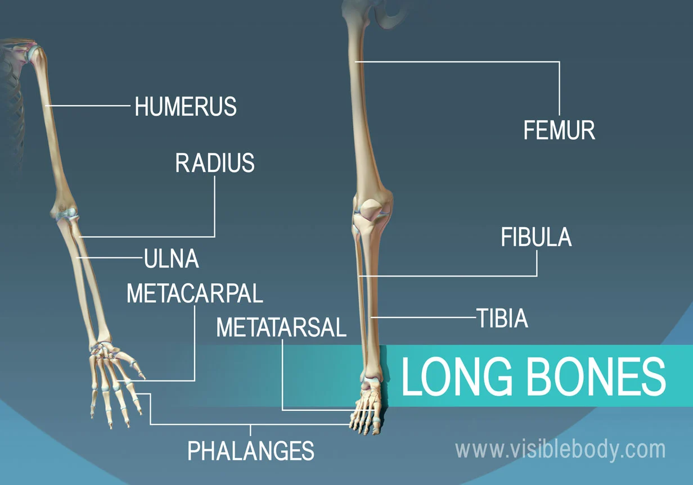
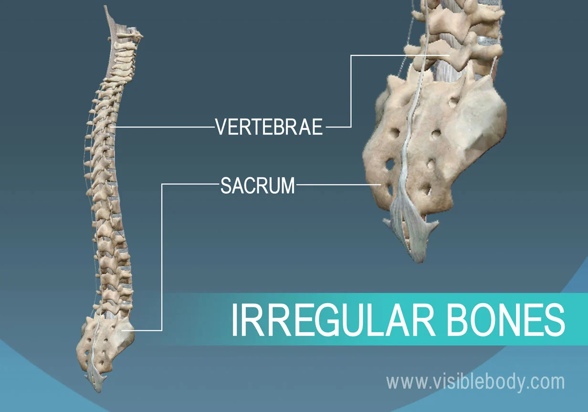

Go Back
Eye
What is Eye?
To better understand a student’s vision, it is important to know how each part of the eye contributes to a person's ability to see. Each area of the eye has an important role and must function properly in order for the eye to function properly. The following is a quick lesson in the structure and functions of the eye.
There are three ways areas, or underlying reasons for, a visual impairment. The first, there may be damage or a result of an injury to one or more parts of the eye essential to vision. This damage may interfere with the way the eye receives or processes visual information. Second, the eyeball may be proportioned incorrectly (have different dimensions than usual), making it harder to focus on objects or may not have developed correctly. And finally, the part of the brain that processes visual information may not work properly. The eye may be perfectly normal, but the brain is not able to analyze and interpret visual information so that the person can see.
Parts of Eye
As part of the coursework for becoming certified as a Teacher of Students with Visual Impairments, it is necessary to take a class on the structure and function of the eye. Understanding the significance of each area of the eye can help a TVI understand the possible effects of various visual diagnosis.
1. Tear Layer
The Tear Layer (The Lacrimal System) is the first layer of the eye that light strikes. It is clear, moist, and salty. Its purpose is to keep the eye smooth and moist.
2. Cornea
The Cornea is the second structure that light strikes. It is the clear, transparent front part of the eye that covers the iris, pupil and anterior chamber and provides most of an eye’s optical power (if too flat = hyperopia/farsightedness; if too steep = myopia/nearsightedness). It needs to be smooth, round, clear, and tough. It is like a protective window. The function of the cornea is to let light rays enter the eye and converge the light rays.
3. Anterior Chamber
The Anterior Chamber is filled with Aqueous Humor. Aqueous Humour is a clear, watery fluid that fills the space between the back surface of the cornea and the front surface of the vitreous, bathing the lens (The anterior and posterior chambers. Both are located in the front part of the eye, in front of the lens). The eye receives oxygen through the aqueous. Its function is to nourish the cornea, iris, and lens by carrying nutrients, it removes waste products excreted from the lens, and maintain intraocular pressure and thus maintains the shape of the eye. This gives the eye its shape. It must be clear to function properly.
4. Iris
The iris is the pigmented tissue lying behind the cornea that gives color to the eye and controls the amount of light entering the eye by varying the size of the papillary opening. It functions like a camera. The color of the iris affects how much light gets in. The iris controls light constantly, adapts to lighting changes, and is responsible for near point reading (to see close, pupils must constrict)
Pupil. It is a variable-sized black circular opening in the center of the iris that regulates the amount of light that enters the eye. The pupil needs to be round in order to constrict.
Constricted. A constricted pupil occurs when the pupil size is reduced to constriction of the iris or relaxation of the iris dilator muscle. The iris constricts with bright illumination, with certain drugs, and can be a consequence of ocular inflammation.
Dilated. A dilated pupil is an enlarged pupil, resulting from contraction of the dilator muscle or relaxation of the iris sphincter. It occurs normally in dim illumination, or may be produced by certain drugs (mydriatics) or result from blunt trauma.
5. Lens
The lens is the natural lens of the eye (chrystaline lens). Transparent, biconvex intraocular tissue that helps bring rays of light to focus on the retina (It bends light, but not as much as the cornea). Suspended by fine ligaments (zonules) attached between ciliary processes. It has to be clear, has to have a power of about +16, and has to be pliable so it can control refraction (This becomes less pliable as you age leading to presbiopia).
Ciliary Body. The circumferential tissue (a ring of tissue between the end of the choroids and the beginning of the iris) inside the eye composed of the ciliary muscle (involved in lens accommodation and control of intraocular pressure and thus the shape of the lens) and 70 ciliary processes that produce aqueous fluid.
6. Vitreous Humour (Chamber)
Vitreous Humour (Chamber) is the transparent, colorless gelatinous mass that fills rear two-thirds of the eyeball, between the lens and the retina. It has to be clear so light can pass through it and it has to be there or eye would collapse.
7. Retina
The retina is the light sensitive nerve tissue in the eye that converts images from the eye’s optical system into electrical impulses that are sent along the optic nerve to the brain, to interpret as vision. Forms a thin membranous lining of the rear two-thirds of the globe; consists of layers that include two types of cells: rods and cones. There is no retina over the optic nerve which causes a blind spot (This is the sightless area within the visual field of a normal eye. It is caused by absence of light sensitive photoreceptors where the optic nerve enters the eye.)
Cones The cones are the light-sensitive retinal receptor cell that provides the sharp visual acuity (detail vision) and color discrimination; most numerous in macular area. Function under bright lighting.
Rods The light-sensitive, specialized retinal receptor cell that works at low light levels (night vision). The rods function with movement and provide light/dark contrast. It makes up peripheral vision.
Macula It is the “yellow spot” in the small (3 °) central area of the retina surrounding the fovea. It is the area of acute central vision (used for reading and discriminating fine detail and color). Within this area is the largest concentration of cones
Fovea The fovea is the central pit in the macula that produces the sharpest vision. It contains a high concentration of cones within the macula and no retinal blood vessels.
8. Choroid
The vascular (major blood vessel), central layer of the eye lying between the retina and sclera. Its function is to provide nourishment to the outer layers of the retina through blood vessels. It is part of the uveal tract.
9. Sclera
The sclera is the opaque, fibrous, tough, protective outer layer of the eye (“white of the eye”) that is directly continuous with the cornea in front and with the sheath covering the optic nerve behind. The sclera provides protection and form.
10. Optic Nerve
The Optic Nerve is the largest sensory nerve of the eye. It carries impulses for sight from the retina to the brain. Composed of retinal nerve fivers that exit the eyeball through the optic disc, traverse the orbit, pass through the optic foramen into the cranial cavity, where they meet fibers from the other optic nerve at the optic chiasm.
11. Extraocular Muscles
There are six extraocular muscles in each eye:
Rectus Muscles. There are four Rectus muscles that are responsible for straight movements: Superior (upward), Inferior (lower), Lateral (toward the outside, or away from the nose), and Medial (toward the inside, or toward the nose).
Oblique Muscles. There are two Oblique muscles that are responsible for angled movements. The superioroblique muscles control angled movements upward toward the right or left. Inferior oblique muscles control angled movements downward toward the right or left.
Common Problems and Remedies
Most people have eye problems at one time or another. Some are minor and will go away on their own, or are easy to treat at home. Others need a specialist’s care.
Whether your vision isn’t what it used to be, or never was that great, there are things you can do to get your eye health back on track.
See if any of these common problems sound familiar. And always check with a doctor if your symptoms are really bad or don’t clear up within a few days.
Eyestrain
Anyone who reads for hours, works at a computer, or drives long distances knows about this one. It happens when you overuse your eyes. They get tired and need to rest, just like any other part of your body.
If your eyes feel strained, give them some time off. If they’re still weary after a few days, check with your doctor to make sure it isn’t another problem.
Red Eyes
Your eyes look bloodshot. Why?
Their surface is covered in blood vessels that expand when they’re irritated or infected. That gives your eyes the red look.
Eyestrain can do it, and so can a late night, a lack of sleep, or allergies. If an injury is the cause, get it checked by your doctor.
Red eyes could be a symptom of another eye condition, like conjunctivitis (pinkeye) or sun damage from not wearing shades over the years. If over-the-counter eye drops and rest don’t clear it up, see your doctor.
Night Blindness
Is it hard to see at night, especially while driving? Is it tough to find your way around in dark places, such as movie theaters?
That sounds like night blindness. It’s a symptom, not a problem in its own right. Nearsightedness, cataracts, keratoconus, and a lack of vitamin A all cause a type of night blindness that doctors can fix.
Some people are born with this problem, or it might develop from a degenerative disease involving the retina, and that usually can’t be treated. If you have it, you’ll need to be extra careful in areas of low light.
Lazy Eye
Lazy eye, or amblyopia, happens when one eye doesn’t develop properly. Vision is weaker in that eye, and it tends to move “lazily” around while the other eye stays put. It’s found in infants, children, and adults, and rarely affects both eyes. Treatment needs to be sought immediately for infants and children.
Lifelong vision problems can be avoided if a lazy eye is detected and treated during early childhood. Treatment includes corrective glasses or contact lenses and using a patch or other strategies to make a child use the lazy eye.
Cross Eyes (Strabismus) and Nystagmus
If your eyes aren’t lined up with each other when you look at something, you could have strabismus. You might also hear it called crossed eyes or walleye.
This problem won’t go away on its own. You’ll need to get an ophthalmologist, or eye specialist, to correct it.
With nystagmus, the eye moves or "jiggles" all the time on its own.
There are many treatments, including vision therapy to make your eyes stronger. Surgery is also an option. Your doctor will examine your eyes to see which treatment might work best for you.
Colorblindness
When you can’t see certain colors, or can’t tell the difference between them (usually reds and greens), you may be colorblind. It happens when the color cells in your eye (the doctor will call them cone cells) are absent or don’t work.
When it’s most severe, you can only see in shades of gray, but this is rare. Most people who have it are born with it, but you can get it later in life from certain drugs and diseases. Your doctor can tell you what’s to blame. Men are much more likely to be born with it than women.
Your eye doctor can diagnose it with a simple test. There’s no treatment if you’re born with it, but special contacts and glasses can help some people tell the difference between certain colors.
Uveitis
This is the name for a group of diseases that cause inflammation of the uvea. That’s the middle layer of the eye that contains most of the blood vessels.
These diseases can destroy eye tissue, and even cause eye loss. People of all ages can have it. Symptoms may go away quickly or last for a long time.
People with immune system conditions like AIDS, rheumatoid arthritis, or ulcerative colitis may be more likely to have uveitis. Symptoms may include:
- Blurred vision
- Eye pain
- Eye redness
- Light sensitivity
See your doctor if you have these symptoms and they don’t go away within a few days. There are different kinds of treatment for uveitis, depending on the type you have.
Presbyopia
This happens when you lose the ability, despite good distance vision, to clearly see close objects and small print.
After age 40 or so, you may have to hold a book or other reading material farther away from your eyes to make it easier to read. Sort of like your arms are too short.
Reading glasses, contact lenses, LASIK, which is laser eye surgery, and other procedures can be used to restore good reading vision.
Floaters
>
These are tiny spots or specks that float across your field of vision. Most people notice them in well-lit rooms or outdoors on a bright day.
Floaters are usually normal, but they sometimes can be a sign of a more serious eye problem, like retinal detachment. That’s when the retina at the back of your eye separates from the layer underneath. When this happens, you might also see light flashes along with the floaters or a dark shadow come across the edge of your sight.
If you notice a sudden change in the type or number of spots or flashes you see or a new dark “curtain" in your peripheral vision, go to your eye doctor as soon as possible.
Dry Eyes
This happens when your eyes can't make enough good-quality tears. You might feel like something is in your eye or like it’s burning. Rarely, in severe cases, extreme dryness can lead to some loss of vision. Some treatments include:
Using a humidifier in your home
- Special eye drops that work like real tears
- Plugs in your tear ducts to lessen drainage
- Lipiflow, a procedure that uses heat and pressure to treat dry eyes
-
- Testosterone eyelid cream
-
- Nutritional supplements with fish oil and omega-3
- If your dry eye problem is chronic, you may have dry eye disease. You doctor could prescribe medicated drops like cyclosporine (Cequa, Restasis) or lifitegrast (Xiidra) to stimulate tear production.
Excess Tearing
It has nothing to do with your feelings. You might be sensitive to light, wind, or temperature changes. Try to protect your eyes by shielding them or wearing sunglasses (go for wraparound frames -- they block more wind than other types).
Tearing may also signal a more serious problem, like an eye infection or a blocked tear duct. Your eye doctor can treat or correct both of these conditions.
Cataracts
These are cloudy areas that develop in the eye lens.
A healthy lens is clear like a camera's. Light passes through it to your retina -- the back of your eye where images are processed. When you have a cataract, light can't get through as easily. The result: You can't see as well and may notice glare or a halo around lights at night.
Cataracts often form slowly. They don't cause symptoms like pain, redness, or tearing in the eye.
Some stay small and don't affect your sight. If they do progress and affect your vision, surgery almost always works to bring it back.
Glaucoma
Your eye is like a tire: Some pressure inside it is normal and safe. But levels that are too high can damage your optic nerve. Glaucoma is the name for a group of diseases that cause this condition.
A common form is primary open angle glaucoma. Most people who have it don’t have early symptoms or pain. So it's important to keep up with your regular eye exams.
It doesn’t happen often, but glaucoma can be caused by:
An injury to the eye
- Blocked blood vessels
- Inflammatory disorders of the eye
- Treatment includes prescription eye drops or surgery.
Retinal Disorders
The retina is a thin lining on the back of your eye that is made up of cells that collect images and pass them on to your brain. Retinal disorders block this transfer. There are different types:
- Age-related macular degeneration refers to a breakdown of a small portion of the retina called the macula.
- Diabetic retinopathy is damage to the blood vessels in your retina caused by diabetes.
- Retinal detachment happens when the retina separates from the layer underneath.
- It’s important to get an early diagnosis and have these conditions treated.
Conjunctivitis (Pinkeye)
In this condition, tissue that lines the back of your eyelids and covers your sclera gets inflamed. It can cause redness, itching, burning, tearing, discharge, or a feeling that something is in your eye.
People of all ages can get it. Causes include infection, exposure to chemicals and irritants, or allergies.
Wash your hands often to lower your chance of getting it.
Corneal Diseases
The cornea is the clear, dome-shaped "window" at the front of your eye. It helps to focus the light that comes in. Disease, infection, injury, and exposure to toxins can damage it. Signs include:
- Red eyes
- Watery eyes
- Pain
- Reduced vision, or a halo effect
The main treatment methods include:
- A new eyeglasses or contacts prescription
- Medicated eye drops
- Surgery
Eyelid Problems
Your eyelids do a lot for you. They protect your eye, spread tears over its surface, and limit the amount of light that can get in.
Pain, itching, tearing, and sensitivity to light are common symptoms of eyelid problems. You might also have blinking spasms or inflamed outer edges near your eyelashes.
Treatment could include proper cleaning, medication, or surgery.
Vision Changes
As you get older, you may find that you can’t see as well as you once did. That’s normal. You’ll probably need glasses or contacts. You may choose to have surgery (LASIK) to correct your vision. If you already have glasses, you may need a stronger prescription.
Other, more serious conditions also happen as you age. Eye diseases like macular degeneration, glaucoma, and cataracts, can cause vision problems. Symptoms vary a lot among these disorders, so keep up with your eye exams.
Some vision changes can be dangerous and need immediate medical care. Anytime you have a sudden loss of vision, or everything looks blurry -- even if it’s temporary -- see a doctor right away. Go to the emergency room or call 911.
Problems With Contact Lenses
They work well for many people, but you need to take care of them. Wash your hands before you touch them. Follow the care guidelines that came with your prescription. And follow these rules:
- Never wet them by putting them in your mouth. That can make an infection more likely.
- Make sure your lenses fit properly, so they don’t scratch your eyes.
- Use eye drops that say they're safe for contact lenses.
- Never use homemade saline solutions. Even though some lenses are FDA-approved for sleeping in them, doing so raises the risk of a serious infection.
- If you do everything right and still have problems with your contacts, see your eye doctor. You might have allergies, dry eyes, or just be better off with glasses. Once you know what the problem is, you can decide what’s best for you.
Ear
The ear is an advanced and very sensitive organ of the human body. The ear’s function is to transmit and transduce sound to the brain through the parts of the ear: the outer ear, the middle ear and the inner ear.
The major task of the ear is to detect, transmit and transduce sound. Another very important function of the ear is to maintain our sense of balance.
The best way to describe the functioning of the ear is to describe the path which the sound waves take on their way through the ear. In the video you can see the journey of the sound waves through the ear.
The sound waves travel from the outer ear and in through the auditory canal, causing the eardrum, or tympanic membrane, to vibrate. This, in turn, causes the three small bones, known as the ossicles, or the hammer, the anvil and the stirrup, in the middle ear to move. The vibrations move via the oval window through the fluid in the cochlea in the inner ear, stimulating thousands of tiny hair cells. This results in the transformation of the vibrations into electrical impulses finally perceived by the brain as sound.
The ear consists of many small parts, but can be divided into three major parts:
- The outer ear
- The middle ear
- The inner ear
Parts of Ear
The most-striking differences between the human ear and the ears of other mammals are in the structure of the outermost part, the auricle. In humans the auricle is an almost rudimentary, usually immobile shell that lies close to the side of the head. It consists of a thin plate of yellow elastic cartilage covered by closely adherent skin. The cartilage is molded into clearly defined hollows, ridges, and furrows that form an irregular shallow funnel. The deepest depression, which leads directly to the external auditory canal, or acoustic meatus, is called the concha. It is partly covered by two small projections, the tonguelike tragus in front and the antitragus behind. Above the tragus a prominent ridge, the helix, arises from the floor of the concha and continues as the incurved rim of the upper portion of the auricle. An inner, concentric ridge, the antihelix, surrounds the concha and is separated from the helix by a furrow, the scapha, also called the fossa of the helix. In some ears a little prominence known as Darwin’s tubercle is seen along the upper, posterior portion of the helix; it is the vestige of the folded-over point of the ear of a remote human ancestor. The lobule, the fleshy lower part of the auricle, is the only area of the outer ear that contains no cartilage. The auricle also has several small rudimentary muscles, which fasten it to the skull and scalp. In most individuals these muscles do not function, although some persons can voluntarily activate them to produce limited movements. The external auditory canal is a slightly curved tube that extends inward from the floor of the concha and ends blindly at the tympanic membrane. In its outer third, the wall of the canal consists of cartilage; in its inner two-thirds, of bone. The entire length of the passage (24 mm, or almost 1 inch) is lined with skin, which also covers the outer surface of the tympanic membrane. Fine hairs directed outward and modified sweat glands that produce earwax, or cerumen, line the canal and discourage insects from entering it.
Middle-ear cavity
The cavity of the middle ear is a narrow air-filled space. A slight constriction divides it into an upper and a lower chamber, the tympanum (tympanic cavity) proper below and the epitympanum above. These chambers are also referred to as the atrium and the attic, respectively. The middle-ear space roughly resembles a rectangular room with four walls, a floor, and a ceiling. The outer (lateral) wall of the middle-ear space is formed by the tympanic membrane. The ceiling (superior wall) is a thin plate of bone that separates the middle-ear cavity from the cranial cavity and brain above. The floor (inferior wall) is also a thin bony plate, in this case separating the middle-ear cavity from the jugular vein and the carotid artery below. The back (posterior) wall partly separates the middle-ear cavity from another cavity, the mastoid antrum, but an opening in this wall leads to the antrum and to the small air cells of the mastoid process, which is the roughened, slightly bulging portion of the temporal bone just behind the external auditory canal and the auricle. In the front (anterior) wall is the opening of the eustachian tube (or auditory tube), which connects the middle ear with the nasopharynx. The inner (medial) wall, which separates the middle ear from the inner ear, or labyrinth, is a part of the bony otic capsule of the inner ear. It has two small openings, or fenestrae, one above the other. The upper one is the oval window, which is closed by the footplate of the stapes. The lower one is the round window, which is covered by a thin membrane.
Auditory ossicles
Crossing the middle-ear cavity is the short ossicular chain formed by three tiny bones that link the tympanic membrane with the oval window and inner ear. From the outside inward they are the malleus (hammer), the incus (anvil), and the stapes (stirrup). The malleus more closely resembles a club than a hammer, and the incus looks more like a premolar tooth with uneven roots than an anvil. These bones are suspended by ligaments, which leave the chain free to vibrate in transmitting sound from the tympanic membrane to the inner ear.
The malleus consists of a handle and a head. The handle is firmly attached to the tympanic membrane from the centre (umbo) to the upper margin. The head of the malleus and the body of the incus are joined tightly and are suspended in the epitympanum just above the upper rim of the tympanic annulus, where three small ligaments anchor the head of the malleus to the walls and roof of the epitympanum. Another minute ligament fixes the short process (crus) of the incus in a shallow depression, called the fossa incudis, in the rear wall of the cavity. The long process of the incus is bent near its end and bears a small bony knob that forms a loose ligament-enclosed joint with the head of the stapes. The stapes is the smallest bone in the body. It is about 3 mm (0.1 inch) long and weighs scarcely 3 mg (0.0001 ounce). It lies almost horizontally, at right angles to the process of the incus. Its base, or footplate, fits nicely in the oval window and is surrounded by the elastic annular ligament, although it remains free to vibrate in transmitting sound to the labyrinth.
Muscles
Two minuscule muscles are located in the middle ear. The longer muscle, called the tensor tympani, emerges from a bony canal just above the opening of the eustachian tube and runs backward and then outward as it changes direction in passing over a pulleylike projection of bone. The tendon of this muscle is attached to the upper part of the handle of the malleus. When contracted, the tensor tympani tends to pull the malleus inward and thus maintains or increases the tension of the tympanic membrane. The shorter, stouter muscle, called the stapedius, arises from the back wall of the middle-ear cavity and extends forward and attaches to the neck of the head of the stapes. Its reflex contractions tend to tip the stapes backward, as if to pull it out of the oval window. Thus, it selectively reduces the intensity of sounds entering the inner ear, especially those of lower frequency.
Nerves
The seventh cranial nerve, called the facial nerve, passes by a somewhat circuitous route through the facial canal in the petrous portion of the temporal bone on its way from the brainstem to the muscles of expression of the face. A small but important branch, the chorda tympani nerve, emerges from the canal into the middle-ear cavity and runs forward along the inner surface of the pars tensa of the membrane, passing between the handle of the malleus and the long process of the incus. Since at this point it is covered only by the tympanic mucous membrane, it appears to be quite bare. Then it resumes its course through the anterior bony wall, bringing sensory fibres for taste to the anterior two-thirds of the tongue and parasympathetic secretory fibres to salivary glands.
Eustachian tube
The eustachian tube, about 31–38 mm (1.2–1.5 inches) long, leads downward and inward from the tympanum to the nasopharynx, the space that is behind and continuous with the nasal passages and is above the soft palate. At its upper end the tube is narrow and surrounded by bone. Nearer the pharynx it widens and becomes cartilaginous. Its mucous lining, which is continuous with that of the middle ear, is covered with cilia, small hairlike projections whose coordinated rhythmical sweeping motions speed the drainage of mucous secretions from the tympanum to the pharynx.
The eustachian tube helps ventilate the middle ear and maintain equal air pressure on both sides of the tympanic membrane. The tube is closed at rest and opens during swallowing so that minor pressure differences are adjusted without conscious effort. During an underwater dive or a rapid descent in an airplane, the tube may remain tightly closed. The discomfort that is felt as the external pressure increases can usually be overcome by attempting a forced expiration with the mouth and nostrils held tightly shut. This maneuver, which raises the air pressure in the pharynx and causes the tube to open, is called the Valsalva maneuver, named for Italian physician-anatomist Antonio Maria Valsalva (1666–1723), who recommended it for clearing pus from an infected middle ear.
Vestibule
The two membranous sacs of the vestibule, the utricle and the saccule, are known as the otolith organs. Because they respond to gravitational forces, they are also called gravity receptors. Each sac has on its inner surface a single patch of sensory cells called a macula, which is about 2 mm (0.08 inch) in diameter. The macula monitors the position of the head relative to the vertical. In the utricle the macula projects from the anterior wall of that tubular sac and lies primarily in the horizontal plane. In the saccule the macula is in the vertical plane and directly overlies the bone of the inner wall of the vestibule. In shape it is elongated and resembles the letter J. Each macula consists of neuroepithelium, a layer that is made up of supporting cells and sensory cells, as well as a basement membrane, nerve fibres and nerve endings, and underlying connective tissue. The sensory cells are called hair cells because of the hairlike cilia—stiff nonmotile stereocilia and flexible motile kinocilia—that project from their apical ends. The nerve fibres are from the superior, or vestibular, division of the vestibulocochlear nerve. They pierce the basement membrane and, depending on the type of hair cell, either end on the basal end of the cell or form a calyx, or cuplike structure, that surrounds it.
The membranous labyrinth of the vestibular system (centre), which contains the organs of balance, and (lower left) the cristae of the semicircular ducts and (lower right) the maculae of the utricle and saccule.
Each of the hair cells of the vestibular organs is topped by a hair bundle, which consists of about 100 fine nonmotile stereocilia of graded lengths and a single motile kinocilium. The stereocilia are anchored in a dense cuticular plate at the cell’s apex. The single kinocilium, which is larger and longer than the stereocilia, rises from a noncuticular area of the cell membrane at one side of the cuticular plate. The longest stereocilia are those closest to the kinocilium; the stereocilia decrease in length in stepwise fashion away from the kinocilium. Minute filamentous strands link the tips and shafts of neighbouring stereocilia to one another. When the hair bundles are deflected—e.g., because of a tilt of the head—the hair cells are stimulated to alter the rate of the nerve impulses that they are constantly sending via the vestibular nerve fibres to the brainstem. Covering the entire macula is a delicate acellular structure, the otolithic, or statolithic, membrane. This membrane is sometimes described as gelatinous, although it has a fibrillar pattern. The surface of the membrane is covered by a blanket of rhombohedral crystals, referred to as otoconia or statoconia, which consist of calcium carbonate in the form of calcite. These crystalline particles, which range in length from 1 to 20 μm (1 μm = 0.000039 inch), are much denser than the membrane—their specific gravity is almost three times that of the membrane and the endolymph—and thus add considerable mass to it.
The vestibular hair cells are of two types: type I cells have a rounded body enclosed by a nerve calyx, and type II cells have a cylindrical body with nerve endings at the base. They form a mosaic on the surface of the maculae, with the type I cells dominating in a curvilinear area (the striola) near the centre of the macula and the cylindrical cells around the periphery. The significance of these patterns is poorly understood, but they may increase sensitivity to slight tiltings of the head.
Semicircular canals
The three semicircular canals of the bony labyrinth are designated according to their position: superior, horizontal, and posterior. The superior and posterior canals are in diagonal vertical planes that intersect at right angles. Each canal has an expanded end, the ampulla, which opens into the vestibule. The ampullae of the horizontal and superior canals lie close together, just above the oval window, but the ampulla of the posterior canal opens on the opposite side of the vestibule. The other ends of the superior and posterior canals join to form a common stem, or crus, which also opens into the vestibule. Nearby is the mouth of a canal called the vestibular aqueduct, which opens into the cranial cavity. The other end of the horizontal canal has a separate opening into the vestibule. Thus, the vestibule completes the circle for each of the semicircular canals.
Each of the three bony canals and its ampulla enclose a membranous semicircular duct of much smaller diameter that has its own ampulla. The membranous ducts and ampullae follow the same pattern as the canals and ampullae of the bony labyrinth, with their openings into the utricle and with a common crus for the superior and posterior ducts. Like the other parts of the membranous labyrinth, they are filled with endolymph and surrounded by perilymph. The narrow endolymphatic duct passes from the utricle through the vestibular aqueduct into the cranial cavity, carrying excess endolymph to be absorbed by the endolymphatic sac.
Each membranous ampulla contains a saddle-shaped ridge of tissue called the crista, the sensory end organ that extends across it from side to side. The crista is covered by neuroepithelium, with hair cells and supporting cells. From this ridge rises a gelatinous structure, the cupula, which extends to the roof of the ampulla immediately above it, dividing the interior of the ampulla into two approximately equal parts. Like the hair cells of the maculae, the hair cells of the cristae have hair bundles projecting from their apices. The kinocilium and the longest stereocilia extend far up into the substance of the cupula, occupying fine parallel channels. Thus, the cupula is attached at its base to the crista but is free to incline toward or away from the utricle in response to the slightest flow of endolymph or a change in pressure. The tufts of cilia move with the cupula and, depending on the direction of their bending, cause an increase or a decrease in the rate of nerve impulse discharges carried by the vestibular nerve fibres to the brainstem.
Structure of the cochlea
The cochlea contains the sensory organ of hearing. It bears a striking resemblance to the shell of a snail and in fact takes its name from the Greek word for this object. The cochlea is a spiral tube that is coiled two and one-half turns around a hollow central pillar, the modiolus. It forms a cone approximately 9 mm (0.35 inch) in diameter at its base and 5 mm in height. When stretched out, the spiral tube is approximately 30 mm in length. It is widest—2 mm—at the point where the basal coil opens into the vestibule, and it tapers until it ends blindly at the apex. The otherwise hollow centre of the modiolus contains the cochlear artery and vein, as well as the twisted trunk of fibres of the cochlear nerve. This nerve, a division of the very short vestibulocochlear nerve, enters the base of the modiolus from the brainstem through an opening in the petrous portion of the temporal bone called the internal meatus. The spiral ganglion cells of the cochlear nerve are found in a bony spiral canal winding around the central core.
A thin bony shelf, the osseous spiral lamina, winds around the modiolus like the thread of a screw. It projects about halfway across the cochlear canal, partly dividing it into two compartments, an upper chamber called the scala vestibuli (vestibular ramp) and a lower chamber called the scala tympani (tympanic ramp). The scala vestibuli and scala tympani, which are filled with perilymph, communicate with each other through an opening at the apex of the cochlea, called the helicotrema, which can be seen if the cochlea is sliced longitudinally down the middle. At its basal end, near the middle ear, the scala vestibuli opens into the vestibule. The basal end of the scala tympani ends blindly just below the round window. Nearby is the opening of the narrow cochlear aqueduct, through which passes the perilymphatic duct. This duct connects the interior of the cochlea with the subdural space in the posterior cranial fossa (the rear portion of the floor of the cranial cavity).
A smaller scala, called the cochlear duct (scala media), lies between the larger vestibular and tympanic scalae; it is the cochlear portion of the membranous labyrinth. Filled with endolymph, the cochlear duct ends blindly at both ends—i.e., below the round window and at the apex. In cross section this duct resembles a right triangle. Its base is formed by the osseous spiral lamina and the basilar membrane, which separate the cochlear duct from the scala tympani. Resting on the basilar membrane is the organ of Corti, which contains the hair cells that give rise to nerve signals in response to sound vibrations. The side of the triangle is formed by two tissues that line the bony wall of the cochlea: the stria vascularis, which lines the outer wall of the cochlear duct, and the fibrous spiral ligament, which lies between the stria and the bony wall of the cochlea. A layer of flat cells bounds the stria, separating it from the spiral ligament. The hypotenuse is formed by the transparent vestibular membrane (or Reissner membrane), which consists of only two layers of flattened cells. A low ridge, the spiral limbus, rests on the margin of the osseous spiral lamina. The Reissner membrane stretches from the inner margin of the limbus to the upper border of the stria.
A cross section through one of the turns of the cochlea (inset) showing the scala tympani and scala vestibuli, which contain perilymph, and the cochlear duct, which is filled with endolymph.
The spiral ligament extends above the attachment of the Reissner membrane and is in contact with the perilymph in the scala vestibuli. Extending below the insertion of the basilar membrane, it is in contact with the perilymph of the scala tympani. It contains many stout fibres that anchor the basilar membrane and numerous connective-tissue cells. The structure of the spiral ligament is denser behind the stria than near the upper and lower margins. The spiral ligament, like the adjacent stria, is well supplied with blood vessels. It receives the radiating arterioles that pass outward from the modiolus in bony channels of the roof of the scala vestibuli. Branches from these vessels form a network of capillaries above the junction with the Reissner membrane that may be largely responsible for the formation of the perilymph from the blood plasma. Other branches enter the stria, and still others pass behind it to the spiral prominence. From these separate capillary networks, which are not interconnected, small veins descending below the attachment of the basilar membrane collect blood and deliver it to the spiral vein in the floor of the scala tympani.
At the lower margin of the stria is the spiral prominence, a low ridge parallel to the basilar membrane that contains its own set of longitudinally directed capillary vessels. Below the prominence is the outer sulcus. The floor of the outer sulcus is lined by cells of epithelial origin, some of which send long projections into the substance of the spiral ligament. Between these so-called root cells, capillary vessels descend from the spiral ligament. This region appears to have an absorptive rather than a secretory function, and it may be involved in removing waste materials from the endolymph.
In humans the basilar membrane is about 30 to 35 mm in length. It widens from less than 0.1 mm near its basal end to 0.5 mm near the apex. The basilar membrane is spanned by stiff elastic fibres that are connected at their basal ends in the modiolus. Their distal ends are embedded in the membrane but are not actually attached, which allows them to vibrate. The fibres decrease in calibre and increase in length from the basal end of the cochlea near the middle ear to the apex, so that the basilar membrane as a whole decreases remarkably in stiffness from base to apex. Furthermore, at the basal end the osseous spiral lamina is broader, the stria vascularis wider, and the spiral ligament stouter than at the apex. In contrast, however, the mass of the organ of Corti is least at the base and greatest at the apex. Thus, a certain degree of tuning is provided in the structure of the cochlear duct and its contents. With greater stiffness and less mass, the basal end is more attuned to the sounds of higher frequencies. Decreased stiffness and increased mass render the apical end more responsive to lower frequencies.
Beneath the fibrillar layer of the basilar membrane is the acellular ground substance of the membrane. This layer is covered in turn by a single layer of spindle-shaped mesothelial cells, which have long processes arranged longitudinally and parallel, facing the scala tympani and forming the tympanic lamella that is in contact with the perilymph.
Capillary blood vessels are found on the underside of the tympanic lip of the limbus and, in some species, including the guinea pig and humans, within the basilar membrane, beneath the tunnel. These vessels, called spiral vessels, do not enter the organ of Corti but are thought to supply most of the oxygen and other nutrients to its cells. Although the outer spiral vessel is seldom found in adult animals of certain species such as the dog, cat, and rat and is not found in the basilar membrane of every adult human, it is present in the human fetus. Its impressive diameter in the fetus suggests that it is an important channel for blood delivery to the developing organ of Corti.
Organ of Corti
Arranged on the surface of the basilar membrane are orderly rows of the sensory hair cells, which generate nerve impulses in response to sound vibrations. Together with their supporting cells they form a complex neuroepithelium called the basilar papilla, or organ of Corti. The organ of Corti is named after Italian anatomist Alfonso Corti, who first described it in 1851. Viewed in cross section, the most striking feature of the organ of Corti is the arch, or tunnel, of Corti, formed by two rows of pillar cells, or rods. The pillar cells furnish the major support of this structure. They separate a single row of larger, pear-shaped inner hair cells from three or more rows of smaller, cylindrical outer hair cells. The inner hair cells are supported and enclosed by the inner phalangeal cells, which rest on the thin outer portion, called the tympanic lip, of the spiral limbus. On the inner side of the inner hair cells and the cells that support them is a curved furrow called the inner sulcus. This is lined with more or less undifferentiated cuboidal cells.
Each outer hair cell is supported by a phalangeal cell of Deiters, or supporting cell, which holds the base of the hair cell in a cup-shaped depression. From each Deiters’ cell a projection extends upward to the stiff membrane, the reticular lamina, that covers the organ of Corti. The top of the hair cell is firmly held by the lamina, but the body is suspended in fluid that fills the space of Nuel and the tunnel of Corti. Although this fluid is sometimes referred to as cortilymph, its composition is thought to be similar, if not identical, to that of the perilymph. Beyond the hair cells and the Deiters’ cells are three other types of epithelial cells, usually called the cells of Hensen, Claudius, and Boettcher, after the 19th-century anatomists who first described them. Their function has not been established, but they are assumed to help in maintaining the composition of the endolymph by ion transport and absorptive activity.
Each hair cell has a cytoskeleton composed of filaments of the protein actin, which imparts stiffness to structures in which it is found. The hair cell is capped by a dense cuticular plate, composed of actin filaments, which bears a tuft of stiffly erect stereocilia, also containing actin, of graded lengths arranged in a staircase pattern. This so-called hair bundle has rootlets anchored firmly in the cuticular plate. On the top of the inner hair cells 40 to 60 stereocilia are arranged in two or more irregularly parallel rows. On the outer hair cells approximately 100 stereocilia form a W pattern. At the notch of the W the plate is incomplete, with only a thin cell membrane taking its place. Beneath the membrane is the basal body of a kinocilium, although no motile ciliary (hairlike) portion is present as is the case on the hair cells of the vestibular system.
The stereocilia are about 3 to 5 μm in length. The longest make contact with but do not penetrate the tectorial membrane. This membrane is an acellular gelatinous structure that covers the top of the spiral limbus as a thin fibrillar layer, then becomes thicker as it extends outward over the inner sulcus and the reticular lamina. Its fibrils extend radially and somewhat obliquely to end at its lateral border, just above the junction of the reticular lamina and the cells of Hensen. In the upper turns of the cochlea, the margin of the membrane ends in fingerlike projections that make contact with the stereocilia of the outermost hair cells.
The myelin-ensheathed fibres of the vestibulocochlear nerve fan out in spiral fashion from the modiolus to pass into the channel near the root of the osseous spiral lamina, called the canal of Rosenthal. The bipolar cell bodies of these neurons constitute the spiral ganglion. Beyond the ganglion their distal processes extend radially outward in the bony lamina beneath the limbus to pass through an array of small pores directly under the inner hair cells, called the habenula perforata. Here the fibres abruptly lose their multilayered coats of myelin and continue as thin, naked, unmyelinated fibres into the organ of Corti. Some fibres form a longitudinally directed bundle running beneath the inner hair cells and another bundle just inside the tunnel, above the feet of the inner pillar cells. The majority of the fibres (some 95 percent in the human ear) end on the inner hair cells. The remainder cross the tunnel to form longitudinal bundles beneath the rows of the outer hair cells on which they eventually terminate.
The endings of the nerve fibres beneath the hair cells are of two distinct types. The larger and more numerous endings contain many minute vesicles, or liquid-filled sacs, containing neurotransmitters, which mediate impulse transmission at neural junctions. These endings belong to a special bundle of nerve fibres that arise in the brainstem and constitute an efferent system, or feedback loop, to the cochlea. The smaller and less numerous endings contain few vesicles or other cell structures. They are the terminations of the afferent fibres of the cochlear nerve, which transmit impulses from the hair cells to the brainstem (see The physiology of hearing: Cochlear nerve and central auditory pathways).
The total number of outer hair cells in the cochlea has been estimated at 12,000 and the number of inner hair cells at 3,500. Although there are about 30,000 fibres in the cochlear nerve, there is considerable overlap in the innervation of the outer hair cells. A single fibre may supply endings to many hair cells, which thus share a “party line.” Furthermore, a single hair cell may receive nerve endings from many fibres. The actual distribution of nerve fibres in the organ of Corti has not been worked out in detail, but it is known that the inner hair cells receive the majority of afferent fibre endings without the overlapping and sharing of fibres that are characteristic of the outer hair cells.
Viewed from above, the organ of Corti with its covering, the reticular lamina, forms a well-defined mosaic pattern. In humans the arrangement of the outer hair cells in the basal turn of the cochlea is quite regular, with three distinct and orderly rows; but in the higher turns of the cochlea the arrangement becomes slightly irregular, as scattered cells form fourth or fifth rows. The spaces between the outer hair cells are filled by oddly shaped extensions (phalangeal plates) of the supporting cells. The double row of head plates of the inner and outer pillar cells cover the tunnel and separate the inner from the outer hair cells. The reticular lamina extends from the inner border cells near the inner sulcus to the Hensen cells but does not include either of these cell groups. When a hair cell degenerates and disappears as a result of aging, disease, or noise-induced injury, its place is quickly covered by the adjacent phalangeal plates, which expand to form an easily recognized “scar.”
Endolymph and perilymph
The perilymph, which fills the space within the bony labyrinth surrounding the membranous labyrinth, is similar, but not identical, in composition to other extracellular fluids of the body, such as cerebrospinal fluid. The concentration of sodium ions in the perilymph is high (about 150 milliequivalents per litre), and that of potassium ions is low (about 5 milliequivalents per litre), as is true of other extracellular fluids. Like these fluids, the perilymph is apparently formed locally from the blood plasma by transport mechanisms that selectively allow substances to cross the walls of the capillaries. Although it is anatomically possible for cerebrospinal fluid to enter the cochlea by way of the perilymphatic duct, experimental studies have made it appear unlikely that the cerebrospinal fluid is involved in the normal production of perilymph.
The membranous labyrinth is filled with endolymph, which is unique among extracellular fluids of the body, including the perilymph, in that its potassium ion concentration is higher (about 140 milliequivalents per litre) than its sodium ion concentration (about 15 milliequivalents per litre).
The process of formation of the endolymph and the maintenance of the difference in ionic composition between it and perilymph are not yet completely understood. The Reissner membrane forms a selective barrier between the two fluids. Blood-endolymph and blood-perilymph barriers, which control the passage of substances such as drugs from the blood to the inner ear, appear to exist as well. Evidence indicates that the endolymph is produced from perilymph as a result of selective ion transport through the epithelial cells of the Reissner membrane and not directly from the blood. The secretory tissue called the stria vascularis, in the lateral wall of the cochlear duct, is thought to play an important role in maintaining the high ratio of potassium ions to sodium ions in the endolymph. Other tissues of the cochlea, as well as the dark cells of the vestibular organs, which must produce their own endolymph, are also thought to be involved in maintaining the ionic composition of the endolymph. Because the membranous labyrinth is a closed system, the questions of flow and removal of the endolymph are also important. The endolymph is thought to be reabsorbed from the endolymphatic sac, although this appears to be only part of the story. Other cochlear and vestibular tissues may also have important roles in regulating the volume and maintaining the composition of the inner-ear fluids.
Common ear problems
Otitis media:
inflammation of the middle ear which causes a build-up of fluid, with or without an infection. If there is an infection, it is often viral. Many children will have several bouts of otitis media before they are 7 years old. Symptoms include crying, ear pulling, mild fever and irritability.
Glue ear:
A type of chronic otitis media. A long-term build-up of thick or sticky fluid in the middle ear behind the eardrum causes hearing loss. This can make socialising and learning difficult, especially if hearing loss is not recognised in early childhood.
Ear wax:
protects the ear and is normal. However, a build-up of wax may be a problem in some adults, and may require wax-softening ear drops. Sometimes the ears may also need to be syringed clean by a doctor. Impacted ear wax rarely causes an ear discharge or pain, but it may cause hearing impairment.
Swimmer’s ear:
develops when humidity, heat and moisture cause the skin layer inside the ear to swell. The addition of further water, for example, through swimming, makes the skin lining the ear canal even softer and liable to infection. Attempts to remove the water with cotton buds or other objects may make the condition worse, causing pain and itching.
Preventing ear problems
Self-management of ear problems, particularly earache and ear discharge, is not recommended. However, the following tips may help prevent ear problems.
- Do not use cotton buds or other devices for cleaning your ears. Repeated attempts to remove earwax with a cotton bud or similar object may result in the wax becoming more deeply impacted.
- If you have swimmer’s ear, you should use earplugs to help prevent water entering your ears.
- If you are working in a noisy environment, including a home environment, use ear protectors.
- Blow your nose correctly. Do not squeeze the nose when blowing and do not sniff.
- It is important that you get any hearing loss checked. Hearing impairment in a child is sometimes suspected if the child is inattentive at school, does not respond to instructions, seems to be disobedient or wants the television on loud. If you suspect a hearing impairment in your child, they should be taken to see a doctor. It is important that a doctor examines their ears, preferably using tympanometry to investigate ear pressure.
When should you seek medical advice?
You should seek medical advice if you have:
- ear pain and/or dizziness;
- pus or blood discharging from your ear;
- earache and feel generally unwell, with a fever and malaise;
- had any neck or head trauma before the ear pain started;
- hearing that is acutely impaired or gradually deteriorating;
- a foreign object in your ear or suspect you might have; or
- used a medicine for your ear and it has not improved or has become itchy, as this may indicate allergic dermatitis as a result of the medicine.
Diabetes
Diabetes is a chronic disease that occurs when the pancreas is no longer able to make insulin, or when the body cannot make good use of the insulin it produces.
Insulin is a hormone made by the pancreas, that acts like a key to let glucose from the food we eat pass from the blood stream into the cells in the body to produce energy. All carbohydrate foods are broken down into glucose in the blood. Insulin helps glucose get into the cells.
Not being able to produce insulin or use it effectively leads to raised glucose levels in the blood (known as hyperglycaemia). Over the long-term high glucose levels are associated with damage to the body and failure of various organs and tissues.
Quiz banner
Types of diabetes
There are three main types of diabetes – type 1, type 2 and gestational.
- Type 1 diabetes can develop at any age, but occurs most frequently in children and adolescents. When you have type 1 diabetes, your body produces very little or no insulin, which means that you need daily insulin injections to maintain blood glucose levels under control. Learn more.
- Type 2 diabetes is more common in adults and accounts for around 90% of all diabetes cases. When you have type 2 diabetes, your body does not make good use of the insulin that it produces. The cornerstone of type 2 diabetes treatment is healthy lifestyle, including increased physical activity and healthy diet. However, over time most people with type 2 diabetes will require oral drugs and/or insulin to keep their blood glucose levels under control. Learn more.
- Gestational diabetes (GDM) is a type of diabetes that consists of high blood glucose during pregnancy and is associated with complications to both mother and child. GDM usually disappears after pregnancy but women affected and their children are at increased risk of developing type 2 diabetes later in life.
Type 1 diabetes
Around 10% of all people with diabetes have type 1 diabetes.
Type 1 diabetes is caused by an autoimmune reaction where the body’s defence system attacks the cells that produce insulin. As a result, the body produces very little or no insulin. The exact causes of this are not yet known, but are linked to a combination of genetic and environmental conditions.
Type 1 diabetes can affect people at any age, but usually develops in children or young adults. People with type 1 diabetes need daily injections of insulin to control their blood glucose levels. If people with type 1 diabetes do not have access to insulin, they will die.
The risk factors for type 1 diabetes are still being researched. However, having a family member with type 1 diabetes slightly increases the risk of developing the disease. Environmental factors and exposure to some viral infections have also been linked to the risk of developing type 1 diabetes.
Symptoms of type 1 diabetes
The most common symptoms of type 1 diabetes include:
- Abnormal thirst and dry
- Sudden weight loss
- Frequent urination
- Lack of energy, tiredness
- Constant hunger
- Blurred vision
- Bedwetting
Diagnosing type 1 diabetes can be difficult so additional tests may be required to confirm a diagnosis.
Management of type 1 diabetes
People with type 1 diabetes require daily insulin treatment, regular blood glucose monitoring and a healthy lifestyle to manage their condition effectively.
Insulin
All people with type 1 diabetes need to take insulin to control their blood glucose levels. There are different types of insulin depending on how quickly they work, when they peak, and how long they last. Insulin is commonly delivered with a syringe, insulin pen or insulin pump.
Types of insulin include:
-
Rapid-acting: usually taken just before or with a meal. These insulins act very quickly to limit the rise in blood sugar, which follows eating. It is essential to avoid overdosage to minimize the risk of low blood sugar (hypoglycemia). Rapid-acting insulins include Asparat, Glulisine, Lispro.
-
Short-acting: usually taken before meals. These insulins are also called regular or neutral insulins. They do not act as quickly as rapid-acting insulins and therefore may be more appropriate in certain people. Short-acting insulins include Actrapid, Humulin R, Insuman Rapid.
-
Intermediate-acting: often taken together with a short-acting insulin. Intermediate-acting insulins start to act within the first hour of injecting, followed by a period of peak activity lasting up to 7 hours. Intermediate acting insulins include Humulin NPH, Protaphane, Insulatard.
-
Long-acting: insulins that are steadily released and can last in the body for up to 24 hours. They are commonly taken in the morning or in the evening, before going to bed. Long-acting insulins include Detemir, Glargine.
Two common insulin treatment plans include:
Twice-daily insulin:
using both short-acting and intermediate-acting insulin.
Basal bolus regimen:
short-acting insulin taken with main meals (usually three times a day) and intermediate-acting insulin given once or twice daily (evening or morning and evening).
Self-monitoring
People with diabetes who require insulin need to check their blood glucose levels regularly to inform insulin dosage. Self-monitoring of blood glucose (SBMG) is the name given to the process of blood glucose testing by people with diabetes at home, school, work or elsewhere. SMBG helps people with diabetes and their healthcare providers understand how their blood glucose levels vary during the day so that their treatment can be adjusted accordingly.
People with type 1 diabetes are usually advised to measure their blood glucose level at least four times a day.
Healthy nutrition
Healthy nutrition — knowing what and when to eat — is an important part of diabetes management as different foods affect your blood glucose levels differently.
A healthy diet for all people with diabetes includes reducing the amount of calories if you are overweight, replacing saturated fats (eg. cream, cheese, butter) with unsaturated fats (eg. avocado, nuts, olive and vegetable oils), eating dietary fibre (eg. fruit, vegetables, whole grains), and avoiding tobacco use, excessive alcohol and added sugar.
Physical activity
Regular physical activity is essential to help keep blood glucose levels under control. It is most effective when it includes a combination of both aerobic (eg. jogging, swimming, cycling) exercise and resistance training, as well as reducing the amount of time spent being inactive.
Prevention of type 1 diabetes
No effective and safe intervention currently exists to prevent type 1 diabetes despite a large number of clinical trials aimed at halting the on-going autoimmune destruction of pancreatic beta cells. However, there is some evidence that overweight and a high growth rate in children are weak risk factors, indicating that a healthy lifestyle that avoids both over-eating and a sedentary lifestyle is recommended for high-risk groups such as the siblings of children with type 1 diabetes. However, this is just one of a number of factors that have also been implicated. These include not being breast-fed, being the first-born, being born by caesarean section and having an older or obese mother.
Although a ‘cure’ for type 1 diabetes is being actively sought, preventing or delaying it in those known to be at risk or, in those already diagnosed, slowing down the auto-immune destruction of beta cells and protecting those cells that are still active are likely to be more achievable goals in the foreseeable future. Neither has been convincingly achieved as yet. However, several studies are underway using interventions such as oral insulin in people known to have markers of islet autoimmunity, trialling drugs already used, for example in psoriasis, to prolong beta cell life and the use of peptide immunotherapies to ‘retrain’ killer T cells, the lymphocytes that are closely involved in the underlying mechanism of type 1 diabetes.
Type 2 diabetes
Type 2 diabetes is the most common type of diabetes, accounting for around 90% of all diabetes cases.
It is generally characterized by insulin resistance, where the body does not fully respond to insulin. Because insulin cannot work properly, blood glucose levels keep rising, releasing more insulin. For some people with type 2 diabetes this can eventually exhaust the pancreas, resulting in the body producing less and less insulin, causing even higher blood sugar levels (hyperglycaemia).
Type 2 diabetes is most commonly diagnosed in older adults, but is increasingly seen in children, adolescents and younger adults due to rising levels of obesity, physical inactivity and poor diet.
The cornerstone of type 2 diabetes management is a healthy diet, increased physical activity and maintaining a healthy body weight. Oral medication and insulin are also frequently prescribed to help control blood glucose levels.
Risk factors
IDF risk factors T2D infographicSeveral risk factors have been associated with type 2 diabetes and include:
- Family history of diabetes
- Overweight
- Unhealthy diet
- Physical inactivity
- Increasing age
- High blood pressure
- Ethnicity
- Impaired glucose tolerance (IGT)*
- History of gestational diabetes
- Poor nutrition during pregnancy
*Impaired glucose tolerance (IGT) is a category of higher than normal blood glucose, but below the threshold for diagnosing diabetes.
Changes in diet and physical activity related to rapid development and urbanisation have led to sharp increases in the numbers of people living with type 2 diabetes.
Symptoms of type 2 diabetes
t2d symptomsThe symptoms of type 2 diabetes are similar to those of type 1 diabetes and include:
- Excessive thirst and dry mouth
- Frequent urination
- Lack of energy, tiredness
- Slow healing wounds
- Recurrent infections in the skin
- Blurred vision
- Tingling or numbness in hands and feet.
- These symptoms can be mild or absent and so people with type 2 diabetes may live several years with the condition before being diagnosed.
Management of type 2 diabetes
The cornerstone of managing type 2 diabetes is a healthy lifestyle, which includes a healthy diet, regular physical activity, not smoking, and maintaining a healthy body weight.
Over time, a healthy lifestyle may not be enough to keep blood glucose levels under control and people with type 2 diabetes may need to take oral medication. If treatment with a single medication is not sufficient, combination therapy options may be prescribed.
When oral medication is not sufficient to control blood glucose levels, people with type 2 diabetes may require insulin injections.
Medications for type 2 diabetes
The most commonly used oral medications for type 2 diabetes include:
Metformin:
reduces insulin resistance and allows the body to use its own insulin more effectively. It is regarded as the first-line treatment for type 2 diabetes in most guidelines around the world.
Sulfonylureas:
stimulate the pancreas to increase insulin production. Sulfonylureas include gliclazide, glipizide, glimepiride, tolbutamide and glibenclamide.
Prevention of type 2 diabetes
There are a number of factors that influence the development of type 2 diabetes. The most influential are lifestyle behaviours commonly associated with urbanisation. Research indicates that a majority of cases, up to 80% according to some studies, of type 2 diabetes could be prevented through healthy diet and regular physical activity. A healthy diet includes reducing the amount of calories if you are overweight, replacing saturated fats (eg. cream, cheese, butter) with unsaturated fats (eg. avocado, nuts, olive and vegetable oils), eating dietary fibre (eg. fruit, vegetables, whole grains), and avoiding tobacco use, excessive alcohol and added sugar.
Regular physical activity is essential to help keep blood glucose levels under control. It is most effective when it includes a combination of both aerobic (eg. jogging, swimming, cycling) exercise and resistance training, as well as reducing the amount of time spent being inactive.
Know your risk of type 2 diabetes
Risk assessment Brief questionnaires are simple, practical and inexpensive ways to quickly identify people who may be at a higher risk of type 2 diabetes and who need to have their level of risk further investigated.
The Finnish Type 2 Diabetes Risk Assessment Form, developed in 2001, is an example of an effective questionnaire that can be used as the basis for developing national questionnaires which take into account local factors. It has eight scored questions, with the total test score providing a measure of the probability of developing type 2 diabetes over the following 10 years. The reverse of the form contains brief advice on what the respondent can do to lower their risk of developing the disease, and whether they should seek advice or have a clinical examination. The test takes only a couple of minutes to complete and can be done online, in pharmacies or at various public campaign events.
IDF has developed a type 2 diabetes online diabetes risk assessment that aims to predict an individual’s risk of developing type 2 diabetes within the next ten years. The test is based on the Finnish Diabetes Risk Score (FINDRISC) developed and designed by Adj. Prof Jaana Lindstrom and Prof. Jaakko Tuomilehto from the National Institute for Health and Welfare, Helsinki, Finland.
Bone
The human skeleton has a number of functions, such as protection and supporting weight. Different types of bones have differing shapes related to their particular function.
So, what are the different types of bones? How are they categorized?
There are five types of bones in the skeleton: flat, long, short, irregular, and sesamoid.
Let’s go through each type and see examples.
1.

Flat Bones Protect Internal Organs
Example of four types of flat bones
There are flat bones in the skull (occipital, parietal, frontal, nasal, lacrimal, and vomer), the thoracic cage (sternum and ribs), and the pelvis (ilium, ischium, and pubis). The function of flat bones is to protect internal organs such as the brain, heart, and pelvic organs. Flat bones are somewhat flattened, and can provide protection, like a shield; flat bones can also provide large areas of attachment for muscles.
2.

Long Bones Support Weight and Facilitate Movement
Examples of 9 Long bones found in the body
The long bones, longer than they are wide, include the femur (the longest bone in the body) as well as relatively small bones in the fingers. Long bones function to support the weight of the body and facilitate movement. Long bones are mostly located in the appendicular skeleton and include bones in the lower limbs (the tibia, fibula, femur, metatarsals, and phalanges) and bones in the upper limbs (the humerus, radius, ulna, metacarpals, and phalanges).
3.

Short Bones Are Cube-shaped
Examples of short bones
Short bones are about as long as they are wide. Located in the wrist and ankle joints, short bones provide stability and some movement. The carpals in the wrist (scaphoid, lunate, triquetral, hamate, pisiform, capitate, trapezoid, and trapezium) and the tarsals in the ankles (calcaneus, talus, navicular, cuboid, lateral cuneiform, intermediate cuneiform, and medial cuneiform) are examples of short bones.
4.

Irregular Bones Have Complex Shapes
Vertebra and pelvis, examples of irregular bones of the human body
Irregular bones vary in shape and structure and therefore do not fit into any other category (flat, short, long, or sesamoid). They often have a fairly complex shape, which helps protect internal organs. For example, the vertebrae, irregular bones of the vertebral column, protect the spinal cord. The irregular bones of the pelvis (pubis, ilium, and ischium) protect organs in the pelvic cavity.
5.

Sesamoid Bones Reinforce Tendons
A sesamoid bone of the body, the patella
Sesamoid bones are bones embedded in tendons. These small, round bones are commonly found in the tendons of the hands, knees, and feet. Sesamoid bones function to protect tendons from stress and wear. The patella, commonly referred to as the kneecap, is an example of a sesamoid bone.
What is bone pain?
Bone pain is extreme tenderness, aching, or other discomfort in one or more bones. It differs from muscle and joint pain because it’s present whether you’re moving or not. The pain is commonly linked to diseases that affect the normal function or structure of the bone.
What causes bone pain?
Many conditions and events can lead to bone pain.
Injury
Injury is a common cause of bone pain. Typically, this pain arises when a person goes through some form of trauma, such as a car accident or fall. The impact may break or fracture the bone. Any damage to the bone can cause bone pain.
Mineral deficiency
To stay strong, your bones require a variety of minerals and vitamins, including calcium and vitamin D. A deficiency in calcium and vitamin D often leads to osteoporosis, the most common type of bone disease. People in the late stages of osteoporosis often have bone pain.
Metastatic cancer
This is cancer that started somewhere else in the body but spread to other body parts. Cancers of the breast, lung, thyroid, kidney, and prostate are among the cancers that commonly spread to the bones.
Bone cancer
Bone cancer describes cancer cells that originate in the bone itself. Bone cancer is much rarer than metastatic bone cancer. It can cause bone pain when the cancer disrupts or destroys the bone’s normal structure.
Diseases that disturb blood supply to bones
Some diseases, such as sickle cell anemia, interfere with the blood supply to the bone. Without a steady source of blood, bone tissue begins to die. This causes significant bone pain and weakens the bone.
Infection
If an infection originates in or spreads to the bones, it can cause a serious condition known as osteomyelitis. This infection of the bone can kill bone cells and cause bone pain.
Leukemia
Leukemia is cancer of the bone marrow. Bone marrow is found in most bones and is responsible for the production of bone cells. People with leukemia often experience bone pain, especially in the legs.
What are the symptoms?
The most noticeable symptom of bone pain is discomfort whether you’re still or moving.
Other symptoms depend on the particular cause of your bone pain.
Cause of bone pain
- Other associated symptoms
- Injury Swelling, visible breaks or deformities, a snap or grinding noise upon injury
- Mineral deficiency Muscle and tissue pain, sleep disturbances, cramps, fatigue, weakness
- Osteoporosis Back pain, stooped posture, loss of height over time
- Metastatic cancer A large range of symptoms depending on where the cancer has spread that may include headache, chest pain, bone fractures, seizures, dizziness, jaundice, shortness of breath, swelling in the belly
- Bone cancer Increased bone breaks, a lump or mass under the skin, numbness or tingling (from when a tumor presses on a nerve)
- Disrupted blood supply to the bones Joint pain, loss of joint function, and weakness
- Infection Redness, streaks from the infection site, swelling, warmth at the infection site, decreased range of motion, nausea, loss of appetite
- Leukemia Fatigue, pale skin, shortness of breath, night sweats, unexplained weight loss
Bone pain in pregnancy
Pelvic bone pain is a common occurrence for many pregnant women. This pain is sometimes referred to as pregnancy-related pelvic girdle pain (PPGP). Symptoms include pain in the pubic bone and stiffness and pain in the pelvic joints.
PPGP typically doesn’t resolve until after delivery. Early treatment can reduce symptoms, though. Treatment options may include:
manual therapy to move the joints correctly
- physical therapy
- water exercises
- exercises to strengthen the pelvic floor
While common, PPGP is still abnormal. You should contact your doctor for treatment if you experience pelvic pain.
How is bone pain diagnosed?
A doctor needs to identify the pain’s underlying cause to recommend treatment. Treating the underlying cause can drastically reduce or eliminate your pain.
Your doctor will perform a physical exam and ask about your medical history. Common questions include:
- Where is the pain located?
- When did you first experience the pain?
- Is the pain getting worse?
- Are there any other symptoms that accompany the bone pain?
Your doctor may order blood tests to look for vitamin deficiencies or cancer markers. Blood tests may also help your doctor detect infections and adrenal gland disorders that can interfere with bone health.
Bone X-rays, MRIs, and CT scans can help your doctor evaluate the affected area for injuries, bone lesions, and tumors within the bone.
Urine studies can be used to detect abnormalities within the bone marrow, including multiple myeloma.
In some cases, your doctor will need to run multiple tests to rule out certain conditions and to diagnose the exact cause of your bone pain.
How is bone pain treated?
When the doctor has determined the cause of the bone pain, they’ll start treating the underlying cause. They may advise you to rest the affected area as much as possible. They’ll likely prescribe you a pain reliever for moderate to severe bone pain.
If your doctor is unsure of the cause and suspects an infection, they’ll start you on antibiotics. Take the full course of the medication, even if your symptoms go away within a few days. Corticosteroids are also commonly used to reduce inflammation.
The treatment options for bone pain include:
Pain relievers
Pain relievers are among the most commonly prescribed medications to reduce bone pain, but they don’t cure the underlying condition. Over-the-counter treatments such as ibuprofen (Advil) or acetaminophen (Tylenol) can be used. Prescription medications such as Paracetamol or morphine may be used for moderate or severe pain.
Running low? Get Tylenol and ibuprofen now.
Antibiotics
If you have a bone infection, your doctor may prescribe powerful antibiotics to kill the germ that’s causing the infection. These antibiotics may include ciprofloxacin, clindamycin, or vancomycin.
Nutritional supplements
People who have osteoporosis need to restore their calcium and vitamin D levels. Your doctor will give you nutritional supplements to treat the mineral deficiency. Supplements are available in liquid, pill, or chewable form.
Find calcium supplements and vitamin D supplements online.
Cancer treatments
Bone pain caused by cancer is difficult to treat. The doctor will need to treat the cancer to relieve the pain. Common cancer treatments include surgery, radiation therapy, and chemotherapy (which can increase bone pain). Bisphosphonates are a type of medication that help prevent bone damage and bone pain in people with metastatic bone cancer. Opiate pain relievers may also be prescribed.
Surgery
You may need surgery to remove parts of bone that have died due to infection. Surgery may also be required to re-set broken bones and remove tumors caused by cancer. Reconstructive surgery may be used in severe cases where joints can be replaced or substituted.
How can bone pain be prevented?
Maintaining strong, healthy bones makes it easier to avoid bone pain. To maintain optimal bone health, remember to:
- maintain a healthy exercise plan
- get enough calcium and vitamin D
- drink only in moderation
- avoid smoking
Aside from improving bone health, you can also avoid injuries that lead to bone pain. Try to prevent falls by keeping your floors clutter-free and watching for loose rugs or poor lighting. You should also be careful when going up or down the stairs. For sporting activities, especially contact sports like football or boxing, wear proper protective gear.
What happens in recovery?
In many cases, it takes some time to heal the issue causing the bone pain, whether the pain comes from chemotherapy or a fracture.
During recovery, avoid aggravating or bumping the affected areas. This can prevent further injury and pain and allow healing. Rest the affected areas as much as possible and immobilize the area if there’s a risk of further injury.
For some people, aids such as braces, splints, and casts can offer support that can both protect the bone and relieve pain.
When to see a doctor?
Serious conditions are often the cause of bone pain. Even mild bone pain may indicate an emergency condition. If you experience unexplained bone pain that doesn’t improve within a few days, consult your doctor.
You should also see a doctor if the bone pain is accompanied by weight loss, decreased appetite, or general fatigue.
Bone pain that results from injury should also prompt a doctor’s visit. Medical treatment is required for fractures from direct trauma to the bone. Without proper treatment, bones can heal in incorrect positions and inhibit movement. Trauma also predisposes you to infection.
child
All children deserve high-quality medical care. As a parent, it is important to be aware of the most up-to-date treatment guidelines so you can be sure your child is getting the best care possible.
The following information from the American Academy of Pediatrics (AAP) lists some of the most common childhood illnesses and their approved treatments. The treatments discussed here are based on scientific evidence and best practices. However, there may be reasons why your pediatrician has different recommendations for your child, especially if your child has an ongoing medical condition or allergy. Your pediatrician will discuss any variations in treatment with you. If you have any questions about appropriate care for your child, please discuss them with your pediatrician.
1. Sore Throat
Sore throats are common in children and can be painful. However, a sore throat that is caused by a virus does not need antibiotics. In those cases, no specific medicine is required, and your child should get better in seven to ten days. In other cases, a sore throat could be caused by an infection called streptococcal (strep throat).
Strep cannot be accurately diagnosed by simply looking at the throat. A lab test or in-office rapid strep test, which includes a quick swab of the throat, is necessary to confirm the diagnosis of strep. If positive for strep, your pediatrician will prescribe an antibiotic. It's very important that your child take the antibiotic for the full course, as prescribed, even if the symptoms get better or go away. Steroid medicines (such as prednisone) are not an appropriate treatment for most cases of sore throat.
Babies and toddlers rarely get it strep throat, but they are more likely to become infected by streptococcus bacteria if they are in child care or if an older sibling has the illness. Although strep spreads mainly through coughs and sneezes, your child can also get it by touching a toy that an infected child has played with.
See The Difference between a Sore Throat, Strep & Tonsillitis and When a Sore Throat is a More Serious Infection.
2. Ear Pain
Ear pain is common in children and can have many causes—including ear infection (otitis media), swimmer's ear (infection of the skin in the ear canal), pressure from a cold or sinus infection, teeth pain radiating up the jaw to the ear, and others. . To tell the difference, your pediatrician will need to examine your child's ear. In fact, an in-office exam is still the best way for your pediatrician to make an accurate diagnosis. If your child's ear pain is accompanied by a high fever, involves both ears, or if your child has other signs of illness, your pediatrician may decide that an antibiotic is the best treatment.
Amoxicillin is the preferred antibiotic for middle ear infections—except when there is an allergy to penicillin or chronic or recurrent infections.
Many true ear infections are caused by viruses and do not require antibiotics. If your pediatrician suspects your child's ear infection may be from a virus, he or she will talk with you about the best ways to help relieve your child's ear pain until the virus runs its course.
See Ear Infection Information, Middle Ear Infections, and Your Child and Ear Infections.
3. Urinary Tract Infection
Bladder infections, also called urinary tract infections or UTIs, occur when bacteria build up in the urinary tract. A UTI can be found in children from infancy through the teen years and into adulthood. Symptoms of a UTI include pain or burning during urination, the need to urinate frequently or urgently, bedwetting or accidents by a child who knows to use the toilet, abdominal pain, or side or back pain.
Your child's doctor will need a urine sample to test for a UTI before determining treatment. Your doctor may adjust the treatment depending on which bacteria is found in your child's urine.
See Detecting Urinary Tract Infections.
4. Skin Infection
In most children with skin infections, a skin test (culture or swab) may be needed to determine the most-appropriate treatment. Tell your doctor if your child has a history of MRSA, staph infection, or other resistant bacteria or if he or she has been exposed to other family members or contacts with resistant bacteria.
See Boils, Abscess & Cellulitis and Tips for Treating Viruses, Fungi & Parasites.
5. Bronchitis
Chronic bronchitis is an infection of the larger, more central airways in the lungs and is more often seen in adults. Often the word "bronchitis" is used to describe a chest virus and does not require antibiotics.
See Bronchitis (CDC.gov).
6. Bronchiolitis
Bronchiolitis is common in infants and young children during the cold and flu season. Your doctor may hear "wheezing" when your child breathes.
Bronchiolitis is most often caused by a virus, which does not require antibiotics. Instead, most treatment recommendations are geared toward making your child comfortable with close monitoring for any difficulty in breathing, eating, or signs of dehydration. Medicines used for patients with asthma (such as albuterol or steroids) are not recommended for most infants and young children with bronchiolitis. Children who were born prematurely or have underlying health problems may need different treatment plans.
See Bronchiolitis and Treating Bronchiolitis in Infants.
7. Pain
The best medicines for pain relief for children are acetaminophen or ibuprofen. Talk to your pediatrician about how much to give your child, as it should be based on your child's weight.
Narcotic pain medications are not appropriate for children with common injuries or complaints such as sprained ankle, ear pain, or sore throats. Codeine should never be used for children as it's been associated with severe respiratory problems and even death in children.
See Fever and Pain Medicine: How Much To Give Your Child.
8. Common Cold
Colds are caused by viruses in the upper respiratory tract. Many young children—especially those in child care—can get 6 to 8 colds per year. Symptoms of a cold (including runny nose, congestion, and cough) may last for up to ten days.
Green mucus in the nose does not automatically mean that antibiotics are needed; common colds never need antibiotics. However, if a sinus infection is suspected, your doctor will carefully decide whether antibiotics are the best choice based on your child's symptoms and a physical exam.
See Children and Colds and Caring for Your Child's Cold or Flu.
9. Bacterial Sinusitis
Bacterial sinusitis is caused by bacteria trapped in the sinuses. Sinusitis is suspected when cold-like symptoms such as nasal discharge, daytime cough, or both last over ten days without improvement.
Antibiotics may be needed if this condition is accompanied by thick yellow nasal discharge and a fever for at least 3 or 4 days in a row.
See The Difference Between Sinusitis and a Cold.
10. Cough
Coughs are usually caused by viruses and do not often require antibiotics.
Cough medicine is not recommended for children 4 years of age and younger, or for children 4 to 6 years of age unless advised by your doctor. Studies have consistently shown that cough medicines do not work in the 4-years-and-younger age group and have the potential for serious side effects. Cough medicines with narcotics—such as codeine—should not be used in children.
Hair Disorders
A number of factors are involved in hair disorders. Genetic factors, diet,
endocrine abnormalities, systemic illnesses, drug intake, and hair shaft
abnormalities may cause hair loss. The diagnosis of hair disorders is
complex and an evaluation of the clinical presentation, history and physical
examination is necessary. Laboratory work-up might be helpful.
Clinical history should include duration of hair loss, family history, affected
areas (localized or diffuse scalp, and scalp alone or other hair bearing areas),
associated nail changes, and hair care habits (shampooing, bleaching,
perming).
Diagnostic office techniques include visual examination of all hair bearing
areas as well as of the nails. Signs of scalp inflammation, infection or scarring
(absense of hair follicle ostia) are helpful for the diferential diagnosis. The main
classification divides hair loss in cicatricial and non-cicatritial alopecia (table1).
Additional specific techniques are gentle hair pulls, hair clipping, hair plucks,
light microscopy of hair fibers, bacterial and fungal cultures of scalp scales,
and finaly scalp 4-mm punch biopsies.
Classification of Alopecia
- Cicatricial alopecia Folliculitis
- Lupus erythematosum
- Lichen planus
- Scleroderma
- Non-cicatricial alopecia Telogen effluvium
- Anagen effluvium
- Androgenetic alopecia
- Alopecia areata
Trichodystrophies
Cicatricial alopecias are difficult to differentiate from one another clinically,
and often require a scalp biopsy for a correct diagnosis. Non-cicatricial alopecia
include disorders that alterate the hair cycling, such as androgenetic alopecia,
the most common cause of hair loss, and shedding. Patients with noncicatricial alopecia may require thyroid-stimulating hormone and ferritin level
testing. The ferritin level should usualy be higher than 40mcg/l to ensure
normal hair growth. Associated acne or menstrual irregularities suggest
hormonal imbalance, and an androgen workup is advised.
Dehydroepiandrosterone-sulphate (DHEA-S) is most commonly elevated in
women with androgen excess.
Normal scalp hair growth patterns
Understanding normal hair growth facts is essential for correct
interpretations of the hair loss events. The average rate of hair growth for a
normal scalp is 0.35mm a day. However, slow growth occurs in elderly people
and patients with chronic illnesses. Scalp hair grows in an assynchronous
pattern, with approximately 80% of hair follicles in an active growing phase
(anagen) and 10 to 20% in a resting phase (telogen). Telogen hair fibers shed in
2 or 3 months and are responsible for the daily hair shed. The average daily
hairloss is 25 to100 hair fibers. Any alteration of the hair growth cycling
manifests clinically as increased shedding of scalp hair.
Telogen Shed (Shedding or Teloen Effluvium)
The complaint “My hair is coming out by the roots” represensents an
alteration in the cyclic growth pattern of scalp hair and may manifest as a
telogen or anagen shed. The mechanism appears to reside in the severity of
insult to the growing germinal center of the anagen hair follicle. A severe insult,
interrupting keratinization and changing of the anagen hair follicle to a resting
or dying hair follicle, produces a telogen follicle. This results in telogen shed.
Normally, telogen (resting) follicles represent aproximately 20% of the total
volume of scalp hair. Any premature interrupiion of anagen phase induces
more telogen hair follicles. Ultimately, this results in incresed shedding of
excessive telogen hair. The diagnosis of telogen effluvium can be made by
excessive hair loss telogen hair as demonstrated with hair pull. This change is
experienced 6 weeks to 4 months after na initial cause or trigger. Common
triggers for a telogen effluvium are: medications, illnesses, childbirth and crash
diets. The etiology of telogen effluvium is generally elucidated by history, with
special concentration on events that have preceded the shed by 6 weeks to 4
months.
In general, telogen effuvium is self-limited, and no treatment is necessary
after initial cause is removed. However, chronic or persistent telogen shed
heralds androgen alopecia or other metabolic or disease states, such as thyroid
disorders. If telogen shedding persists, a more intense medical evaluation is
needed.
Anagen Shed (Effluvium)
The anagen shedding is the result of a major insult to the growing anagen
hair follicle. The arrest of keratinization produces a progressively narrowing
hair shaft that is fragile and fractures easily on its exit from the scalp’s skin.
This type of shedding generally occurs 1 to 2 weeks after the insult. Typical
causes are chemotherapeutic, antimetabolic, alkylating, and cytotoxic agents.
Alopecia Areata
Alopecia areata is considered an autoimmune disease that affects 1to 2% of
the population. It commonly manifests as an oval patch, singular or multiple,
and with occasional confluent patches. It is an inflammatory, non-cicatricial
alopecia. Twenty percent of the cases of alopecia areata proceed to alopecia
totalis, affecting the whole scalp, and 1% to alopecia universalis, or total body
hair loss. Alopecia areata is assciat with atopy, Hashimoto’s thyroiditis, and
other autoimmune diseases. Minor nail dystrophies are common. The primary
diagnosis is based on the hair pull and light microscopy examination of hair
fibers, and biopsy of involved areas.
Treatment depends on the extent of the disease and age of the patient. For
mild to moderate patchy disease, topical corticosteroids are the preferred
treatment. For more extensive or recalcitrant disease, triamcinolone acetonide
(Kenalog suspension, 10 mg per ml) can be injected into the involved sites with
a 30-gauge needle, delivering tiny injections of 0.1ml to each small site. The
total amount should not exceed 10 to 15 mg of triamcinolone per visit every 6
to 8 weeks.
Other options for marked to severe disease are topical minoxidil (Rogaine),
anthralin (Drithocreme), and topical contact sensitizers such as
diphenylcyclopropenone (DPCP), dinitroclorobenzene (DNCB) and squaric acid
dibutylester (SADBE). The expected result of sensitization therapy is around
40-58% cosmetically acceptaple regrowth of hair. DPCP is difficult to obtain in
the United States, being more readily available in Europe and Canada. Other
treatment options include psoralen (Oxsoralen) plus ultraviolet a radiation
(PUVA) and systemic corticosteroids. The use of systemic corticosteroids is
controversial because of the prolonged duration of therapy and the potential
side effects, i.e.; catarats, osteopenia, osteoporosis, and growth retardation.
Patients with alopecia areata need a source of disease-specific information
and support therapy, such as the National Alopecia Areata Foundation
Androgenetic Alopecia
Androgenetic alopecia, an autosomal dominant disorder, is the most
common alopecia in humans, with a prevalence of 23 to 87%. In both sexes, it
presents with a central scalp alopecia and is associated with clinical signs of
sexual development (puberty) and androgen excess. Central alopecia is more
severe in males than females, manifesting as several distinct areas of partial or
complete alopecia. In the female, there is a more diffuse thinning rather than
complete baldness. Androgenetic alopecia can be herald by a chronic telogen
effluvium and failure to regenerate terminal hair.
Female androgenatic alopecia often appears in women with strong family
history of baldness or a personal history of hirsutism, acne, abnornal menses
as signs of androgen excess. Genetically predisposed women may present with
androgenetic alopecia in youth (puberty), in perimenopausal or in
postmenopausal times. Young women have a higer incidence of acquired
adrenal hyperplasia and policystic ovaries. In general, menopausal women have
lower levels of hormones, especially testosterone and estrogen. Testosterone,
however, is relatively high if compared to youth levels. Androgen excess
screening should include measurements of total testosterone and
dehydroepiandrosterone sulfate as well as other laboratory tests, such as a
complete blood count, ferritin measurement, thyroid screening, and antinuclear
factor measurement.
In men, the treatment of androgenetic alopecia consists of creative hairstyles,
hair pieces, hair transplation, and scalp reduction. Medical therapies include
topical minoxidil 5% twice a day and selected antiandrogens. Oral finasteride, a
5--reductase inhibitor, bloks the peripheral conversion of testosterone to
dehidrotestosterone (DHT). Serum and tissue (scalp) DHT concentrations is
decreased in men on finasteride. A significant increase in hair count was
demontrated at after at least 6 months in men treated with finasteride
Women have similar treatment options, but in addition to antiandrogens,
estrogen replacement therapy can be used. These agents include estrogendominant oral contraceptive (Demulen 1/50) or conjugated estrogen (Premarin),
given daily or in conjunction with a progesterone such as medroxyprogesterone
(Provera). Spironolactone (Aldactone) in doses of 50 to 200 mg has been used as
an antiandrogen successfully. If adrenal suppression is needed for androgen
excess, dexamethasone, in doses of 0.125 to 0.25 mg at bedtime, may be used
for 4 months or longer.
Hair Shaft Abnormalities
Hair shaft abnormalities (trichodystrophies) may be inherited or acquired.
Inherited abnormalities may indicate a systemic disorder and may be
associated with mental retardation, short stature, hypogonadism, and other
metabolic disorders. Examples of trichodystrophy are pili torti (corkscrew
hairs), Menkes’ (kinky-hair) syndrome, trichorrhexis nodosa in
argininosuccinicaciduria, trichoschisis (transverse fractures to the hair), and
trichothiodystrophy (sulfur-depleted hair).
Acquired physical and chemical damage are more common than the
inherited ones. Sunlight, hair care techniques (coloring, perming and blow
drying) and chemical processes may result in fragile hair that is easily broken
with normal handling. Usually, this entity manifests as a complaint of failure to
grow (breakage) and is associated with short hair and normal scalp hair
density. Treatment consists of gentle handling and normal shampooing with the
use of leave on conditioners or volumizers. If the cause is not repeated, the hair
normally regrows within a few months.
Trichorrhexis nodosa is the most common trichodystrophy that can be
either inherited or acquired. The inherited form can be associated with
aminoaciduria. The more common acquired form is the result of physical or
chemical trauma. Characteristically, the hair breaks off suddenly and becomes
strikingly short in the affected areas. Diagnosis is made by hair clipping and
microscopy identification of nodes or fractured nodes (“broomstick deformity”).
Treatment consists of discontinuation of hair care procedures except for normal
shampooing and the use of heavy conditioners.
Traction Alopecia and Trichotillomania
Hair loss caused by traction results from physical damage to the hair
shaft, alterations in the growth cycle, and scalp inflammation. Diagnosis is
made by hair pluck, hair clipping, and scalp biopsy. Dystrophic anagen hair
follicles and a variety of traumatic changes to the hair can be noted. If traction
is chronic and repetitive, cicatricial alopecia may result. Practices such as tight
braiding, wearing a ponytail, using elastic hair bands, and rollers, and
extremely repetitive teasing of the hair are responsible for most cases and
should be discontinued.
Trichotillomania is a traction alopecia related to an underlying
psychologic, compulsive disorder. It is commonly seen in young and old women.
In general, the condition is produced by repetitively hair pulling, tugging,
plucking, or clipping. The hair loss manifests in a bizarre pattern. Individuals
presenting with complete hair loss and a short stubble of hair on the scalp,
eyebrows, lashes, or other hairy areas should be suspected of having
trichotillomania. Light microscopy examination of clipped hair demonstrates
fractures of the terminal ends. Scalp biopsy is often diagnostic. Therapy
requires psychologic counseling. The use of anticonvulsants and
antidepressants can be helpful. Such drugs include clomipramine (Anafranil),
fluoxetine (Prozac), and sertraline (Zoloft).
Cicatricial Alopecia
Cicatricial alopecia is irreversible hair loss associated with the destruction of
stem cell reservoir located in the midportion of the follicle. Cicatricial alopecia is
caused by a diverse group of cutaneous disorders with a variety of presentations.
Common causes of cicatricial alopecia are fungal or bacterial folliculitis,
discoid lupus erythematosus, and lichen planopilaris. Other causes are skin
diseases, trauma, scarring bullous disorders (epidermolysis bullosa, bullous
pemphigoid, porphyria cutanea), and neoplastic disease (skin tumors and
cutaneous metastasis). The evaluation of all chronic patchy inflammatory or
noninflammatory cicatricial alopecias comprises potassium hydroxide testing,
fungal and bacterial cultures, and optional serologic testing, depending on
history. Biopsy should be an early step in the evaluation of any case suspected to
represent cicatricial alopecia. A 4-mm punch biopsy generally provides a sufficient
number of hair follicles for examination. Smaller specimens may prove
unsatisfactory. Routine microscopy as well as immunefluorescent studies may be
diagnostic. Even though this group presents with irreversible alopecia, treatment
is always recommended to prevent the areas to spread.
Infeccious folliculitis
Fungal and bacterial infection may be responsible for focal areas of
cicatricial alopecia. Tinea capitis may manifest as an intense
Lupus Erythematosus
Cutaneous lupus erythematosus may present with or without associated
systemic disease. In the scalp, it manifests as erythemathous, indurated
alopecic areas or patchy noninflammatory alopecia similar to alopecia areata.
The inflammatory type results in skin atrophy, hypopigmentation or
hyperpigmentation, and permanent hairloss. Diagnosis is made from clinical
history, skin biopsy for light microscopy and direct immunoflorescence testing,
and laboratory testing for lupus erythematosus, such as antinuclear antibody
profile.
Therapy consist of the use of topical of intralesional corticosteroids. Potent
topical corticosteroids sunh as fluocinonide (Lidex) may be applied at bedtime.
Cutaneos atrophy and striae are the most common side effects, resulting from
overuse of potent topical steroids. Intralesional triamcinolone acetonide (Kenalog),
2.5 to 10 mg per ml, may be injected every 6 to 8 weeks as needed. Sid effects of
intralesional triamcinolone have already been discussed. Topical corticosteroids
and antimalarial agents may be helpful in refractory cases. On occsion, oral
corticosteroids are given. Quiescent, “burnt-out” lesions are best treated with hair
transplantation or scalp reduction.
Lichen Planopilares
Lichen planopilares represents a patchy inflamatory and scarring alopecia,
often manifesting as follicular hyperkeratosis and erythema. It occurs primarily in
adults and may bedifficult to differentiate from cutaneous lupus erythematosus.
Searching for associated skin lesions of lichen planus, skin biopsy for light
microscopy, and immunofluorescence studies may diferentiate the two disorders.
Treatment of lichen planopilares involvesthe use of corticosteroids. Guidelines
for the use of topical corticosteroids are essentially the same as those in chronic
cutaneous lupus erythematosus. Individual lesions in lichen planopilaris are often
quite small and widespread, so intralesionalcorticosteroids are often impractical.
Oral corticosteroids (prednisone) are often effective. The initial dose of 1 mg per kg
per day is tapered as signs of inflammation respond. Oral corticosteroid therapy
may be long-term, therefore requiring monitoring of side effects. Topical
antiinflammatory agents, antiseborrheic shampoos, and keratolytic agents can be
helpful. Chronic scarred, burnt-out areas are best treated with surgical
intervention, sunch has hair transplatation or scalp reduction.
View publication stats
Psychological
What is mental health?
Mental health refers to your emotional and psychological well-being. Having good mental health helps you lead a relatively happy and healthy life. It helps you demonstrate resilience and the ability to cope in the face of life’s adversities.
Your mental health can be influenced by a variety of factors, including life events or even your genetics.
There are many strategies that can help you establish and keep good mental health. These can include:
- keeping a positive attitude
- staying physically active
- helping other people
- getting enough sleep
- eating a healthy diet
- asking for professional help with your mental health if you need it
- socializing with people whom you enjoy spending time with
- forming and using effective coping skills to deal with your problems
What is mental illness?
A mental illness is a broad term which encompasses a wide variety of conditions which affect the way you feel and think. It can also affect your ability to get through day-to-day life. Mental illnesses can be influenced by several different factors, including:
- genetics
- environment
- daily habits
- biology
Mental health statistics
Mental health issues are common in the United States. About one in five American adults experience at least one mental illness each year. And around one in five young people ages 13 to 18 experience a mental illness at some point in their lives, too.
Although mental illnesses are common, they vary in severity. About one in 25 adults experience a serious mental illness (SMI) each year. A SMI can significantly reduce your ability to carry out daily life. Different groups of people experience SMIs at different rates.
According to the National Institute of Mental Health, women are more likely to experience SMI than men. Those ages 18 to 25 are most likely to experience an SMI. People with a mixed-race background are also more likely to experience an SMI than people of other ethnicities.
Mental health disorders
The Diagnostic and Statistical Manual of Mental Disorders, Fifth Edition (DSM-5) helps mental health professionals diagnose mental illnesses. There are many types of mental health disorders. In fact, almost 300 different conditions are listed in DSM-5.
These are some of the most common mental illnesses affecting people in the United States:
Bipolar disorder
Bipolar disorder is a chronic mental illness that affects about 2.6 percent of Americans each year. It is characterized by episodes of energetic, manic highs and extreme, sometimes depressive lows.
These can affect a person’s energy level and ability to think reasonably. Mood swings caused by bipolar disorder are much more severe than the small ups and downs most people experience on a daily basis.
Persistent depressive disorder
Persistent depressive disorder is a chronic type of depression. It is also known as dysthymia. While dysthymic depression isn’t intense, it can interfere with daily life. People with this condition experience symptoms for at least two years.
About 1.5 percent of American adults experience dysthymia each year.
Generalized anxiety disorder
Generalized anxiety disorder (GAD) goes beyond regular everyday anxiety, like being nervous before a presentation. It causes a person to become extremely worried about many things, even when there’s little or no reason to worry.
Those with GAD may feel very nervous about getting through the day. They may think things won’t ever work in their favor. Sometimes worrying can keep people with GAD from accomplishing everyday tasks and chores. GAD affects about 3 percent of Americans every year.
Major depressive disorder
Major depressive disorder (MDD) causes feelings of extreme sadness or hopelessness that lasts for at least two weeks. This condition is also called also called clinical depression.
People with MDD may become so upset about their lives that they think about or try to commit suicide. About 7 percent of Americans experience at least one major depressive episode each year.
Obsessive-compulsive disorder
Obsessive-compulsive disorder (OCD) causes constant and repetitive thoughts, or obsessions. These thoughts happen with unnecessary and unreasonable desires to carry out certain behaviors, or compulsions.
Many people with OCD realize that their thoughts and actions are unreasonable, yet they cannot stop them. More than 2 percent of Americans are diagnosed with OCD at some point in their lifetime.
Post-traumatic stress disorder (PTSD)
Post-traumatic stress disorder (PTSD) is a mental illness that’s triggered after experiencing or witnessing a traumatic event. Experiences that can cause PTSD can range from extreme events, like war and national disasters, to verbal or physical abuse.
Symptoms of PTSD may include flashbacks or being easily startled. It’s estimated that 3.5 percent of American adults experience PTSD.
Schizophrenia
Schizophrenia impairs a person’s perception of reality and the world around them. It interferes with their connection to other people. It’s a serious condition that needs treatment.
They might experience hallucinations, have delusions, and hear voices. These can potentially put them in a dangerous situation if left untreated. It’s estimated that 1 percent of the American population experiences schizophrenia.
Social anxiety disorder
Social anxiety disorder, sometimes called social phobia, causes an extreme fear of social situations. People with social anxiety may become very nervous about being around other people. They may feel like they’re being judged.
This can make it hard to meet new people and attend social gatherings. Approximately 15 million adults in the United States experience social anxiety each year.
Coping with mental illnesses
The symptoms of many mental illnesses may get worse if they’re left untreated. Reach out for psychological help if you or someone you know may have a mental illness.
If you’re unsure where to start, visit your primary care doctor. They can help with the initial diagnosis and provide a referral to a psychiatrist.
It’s important to know that you can still have a full and happy life with a mental illness. Working with a therapist and other members of your mental health team will help you learn healthy ways to manage your condition.
Mental health symptoms
Each type of mental illness causes its own symptoms. But many share some common characteristics.
Common signs of several mental illnesses may include:
- not eating enough or overeating
- having insomnia or sleeping too much
- distancing yourself from other people and favorite activities
- feeling fatigue even with enough sleep
- feeling numbness or lacking empathy
- experiencing unexplainable body pains or achiness
- feeling hopeless, helpless or lost
- smoking, drinking, or using illicit drugs more than ever before
- feeling confusion, forgetfulness, irritability, anger, anxiety, sadness, or fright
- constantly fighting or arguing with friends and family
- having extreme mood swings that cause relationship problems
- having constant flashbacks or thoughts that you can’t get out of your head
- hearing voices in your head that you can’t stop
- having thoughts of hurting yourself or other people
- being unable to carry out day-to-day activities and chores
- Stress and periods of emotional distress can lead to an episode of symptoms. That may make it difficult for you to maintain normal behavior and activities. This period is sometimes called a nervous or mental breakdown. Read more about these episodes and the symptoms they cause.
Mental health diagnosis
Diagnosing a mental health disorder is a multi-step process. During a first appointment, your doctor may perform a physical exam to look for signs of physical issues that could be contributing to your symptoms.
Some doctors may order a series of laboratory tests to screen for underlying or less obvious possible causes.
Your doctor may ask you to fill out a mental health questionnaire. You may also undergo a psychological evaluation. You might not have a diagnosis after your first appointment.
Your doctor may refer you to a mental health expert. Because mental health can be complex and symptoms may vary from person to person, it may take a few appointments for you to get a full diagnosis.
Mental health treatment
Treatment for mental health disorders is not one size fits all, and it does not offer a cure. Instead, treatment aims to reduce symptoms, address underlying causes, and make the condition manageable.
You and your doctor will work together to find a plan. It may be a combination of treatments because some people have better results with a multi-angle approach. Here are the most common mental health treatments:
Medications
The four main categories of medications used to treat mental health disorders are antidepressants, anti-anxiety medications, antipsychotic medications, and mood-stabilizing medications.
Which type is best for you will depend on the symptoms you experience and other health issues you may face. People may try a few medications at different doses before finding something that’s right for them.
Psychotherapy
Talk therapy is an opportunity for you to talk with a mental health provider about your experiences, feelings, thoughts, and ideas. Therapists primarily act as a sounding board and neutral mediator, helping you learn coping techniques and strategies to manage symptoms.
Hospital and residential treatment
Some people may need brief periods of intensive treatment at hospitals or residential treatment facilities. These programs allow an overnight stay for in-depth treatment. There are also daytime programs, where people can participate in shorter periods of treatment.
Lifestyle treatments and home remedies
Alternative treatments can be used in addition to mainstream treatments as a supplement. These steps won’t eliminate mental health issues alone, but they can be helpful.
They include sticking to your treatment plan as closely as possible, avoiding alcohol and drugs, and adopting a healthy lifestyle that incorporates foods that may be a benefit to your brain. This includes omega-3 fatty acids, a type of fish oil that occurs naturally in some high-fat fish.
Mental health therapy
The term therapy refers to several styles of talk therapy. Therapy can be used to treat a variety of disorders, including panic disorders, anxiety, depression, anger issues, bipolar disorder, and post-traumatic stress disorder.
Therapy helps people identify mental health issues and unhealthy behaviors or thought patterns. During sessions you and your therapist can work to change these thoughts and behaviors.
In most cases, therapists focus on current issues, things that are affecting your daily life, and help you find solutions to what you’re experiencing in real time, but each doctor’s approach is different. Read more about the different types and what results you might expect from therapy.
Mental health first aid
Mental Health First Aid is a national public education course. It’s designed to teach people about the warning signs and risk factors of mental health issues. In the training, participants learn about treatments and approaches that can help people with mental health disorders.
This training program is made for people who regularly interact with patients in a healthcare setting. Through scenarios and role-playing, healthcare providers can learn how to help a person in crisis connect with professional and self-help treatment steps.
Mental health exercises
Physical exercise is great for your body. Dancing, swimming, walking, and jogging boost cardio health and strength. They’re also great for your mind. Research shows they can help reduce symptoms of depression and anxiety.
However, there are also “exercises” you can do for your brain. These include:
- Striking a power pose. People who use “power poses” (aka hands on hips) may see a temporary drop in feelings of social anxiety.
- Listening to calming music. A 2013 study of 60 women revealed that people who listen to relaxing music recover faster after stress than people who relax but do not listen to music.
- Practicing progressive muscle relaxation. This process involves tightening and then slowly relaxing various muscle groups. It may be combined with other techniques like listening to calming music or breathing exercises.v
- Finding a yoga pose. One 2017 study showed that just two minutes of performing yoga poses can boost self-esteem and help increase bodily energy.
- Mental health test
When you talk with your doctor or therapist about your mental health, they may go through a series of examinations in order to reach a diagnosis. These steps could include a physical examination, blood or laboratory tests, and a mental health questionnaire.
A series of questions helps doctors understand your thoughts, responses, and reactions to events and scenarios. While this test won’t return immediate results, it will help your doctor better understand what you’re experiencing.
Avoid taking online mental health tests. While these may provide some insight into causes of symptoms, they aren’t administered by a healthcare professional. The questions and answer options may not be as specific as a doctor or therapist might be in an in-person testing environment.
Mental health recovery
Most individuals with mental health issues can and will find treatments that are successful. That means you can get better. Some mental health issues, however, are chronic and ongoing, but even these can be managed with proper treatment and intervention.
Recovery from mental health disorders or issues requires ongoing attention to your mental and overall health, as well as adherence to any behavioral therapy techniques learned from a therapist.
In some cases, treatments like medication may be needed on an on-going basis; others may be able to stop using them at some point. What recovery will mean for you is different than recovery for another person.
Mental health awareness
Mental health is a vital concern for healthcare professionals. Most people know the signs and symptoms of physical illnesses, like a heart attack or stroke. But, they may not be able to pinpoint the physical effects of anxiety, PTSD, or panic.
Awareness campaigns are designed to help people understand these common signs and symptoms.
More than 40 million Americans experience some form of mental illness every year. Knowing that they’re not alone may invite people to seek treatment from a professional. Treatment is key to relief from symptoms and maintain a healthy, active life.
Mental health in teens
Around 21 percent of American teenagers between 13 and 18 years old have experienced a severe mental health disorder, according to the National Alliance on Mental Illness (NAMI). Half will develop a disorder by the time they’re 14 years old.
A significant number of youth are affected by depression in particular. According to the National Institute of Mental Health (NIMH), around 13 percent of Americans between 12 and 17 years old had at least one major depressive episode in 2017.
In fact, the American Academy of Pediatrics (AAP) now endorses universal depression screening for 12- to 18-year-olds. These screenings can be performed by a primary care physician.
Signs and symptoms in teens
The signs and symptoms of mental illness may be brushed aside as the angst of the turbulent teenage years. But, these may be the earliest predictors of mental health disorders or issues that require treatment.
Signs of mental health issues in teenagers include:
- loss of self-esteem
- excessive sleeping
- loss of interest in activities or favorite hobbies
- sudden and unexpected decline in academic performance
- weight loss or changes in appetite
- sudden personality changes, such as anger or aggression
Physiotherapy
Physical Therapy is a branch of rehabilitative healthcare where trained and licensed medical professionals use specially designed equipment and exercise regimens to treat abnormal physical functions.
Physical therapists (PTs) evaluate the patient’s condition, such as an injury, disease, or disability and provide appropriate treatment. PT is a suitable treatment for a variety of health conditions and helps restore and maintain physical function and mobility.
Licensed physical therapists work in conjunction with other medical teams in rehab centers, hospitals, sports and fitness centers, schools, and offices. The list of diseases treated by physical therapy includes neurological disorders, genetic, or musculoskeletal disorders, as well as sports injuries or even common issues like dizziness.
Why Physical Therapy Is Important
A physical therapist is a medical professional who is knowledgeable about your body’s biomechanics. If there are any deficiencies in the physical movement of your body, they can identify the root cause and work on treating it.
Specific areas get weakened after injury or need strengthening post-surgery. By working with your physical therapist, you can target these areas and relieve stress without causing pain.
Particularly for post-operative therapy, physical therapy is seen as the most-effective solution for stress-free recovery.
Since they possess knowledge about your limitations after a surgical procedure, they can help bring out a successful outcome. With certain exercises on the target areas of weakness, they treat the pain source and help improve your well-being.
What Can You Expect from Physical Therapy
walking-pt-elderly-woman
Physical therapists work in tandem with other medical professionals or they can offer it as a standalone treatment.
Usually, in cases where it supports other treatments, your doctor refers you to a physical therapist. In the process of healing, your doctor may suggest physical therapy for preventive, restorative, or pain management procedures.
In other cases, the patients themselves may be aware of their weaknesses, such as stiffness in the neck and shoulder, and seek therapy on their own. People of all ages can improve their health for a long list of diseases treated by physical therapy.
Whichever way you approach a physical therapist, here is what you can expect:
1. Initial Evaluation
First of all, the physical therapist conducts certain tests including the range of motion measurements, evaluation of posture, muscle and joint movement, flexibility, motion, and performance.
2. Diagnosis
Secondly, the PT will provide a clinical diagnosis based on the testing procedures, discuss your short and long- term objectives, and give you a prognosis.
3. Treatment
After they set a plan of care, you receive regular physical therapy treatment, which may go on for weeks or months, based on the medical issue.
4. Self-Management
As a result of the rehab program, the therapist makes recommendations regarding the exercises you can do at home to help speed up the recovery.
Benefits of Physical Therapy
- Physical therapists provide safety exercises that challenge and improve your balance in situations that mimic real-life.
- Physical therapy offers recovery from a sports injury, stroke, trauma, or paralysis, and strengthen the core.
- Persons with chronic medical history or chances of inheriting certain ailments can profit with physical therapy advised by their healthcare provider.
- Pain and age-related medical issues can be managed with physical therapy.
- Manual therapy techniques can reduce the need for surgery and eliminate pain without using medication.
- Stretching and strengthening regularly according to the instructions of your physical therapists improves physical activity and mobility.
- List of Diseases Treated by Physical Therapy
- foot-physical-therapy-treatment
Here are the most common medical conditions treated by physical therapists:
1. Lymphedema
Excess fluids gather in the lymphatic system, which then moves around in the bloodstream, causing swelling. Physical therapists use Complete decongestive therapy (CDT) to reduce swelling and prevent future fluid buildup.
2. Sports Injuries
Specific types of sports injuries like stress fractures can be treated with appropriate recovery programs or prevention exercises for a safe and quick recovery.
3. Muscular Dystrophy
Muscles and skeleton degenerate and get progressively weakened owing to age or various disorders. This can be treated with mobility exercises and using supporting frames.
4. Back and Neck Pain
Acute pain that comes on suddenly or chronic back and neck pain that lasts for months or years restrict normal functioning. Physical therapy eases pain and improves mobility.
5. Limited Range of Motion (ROM)
Too much stress due to the overuse of some parts of your body causes swelling or you feel tenderness in those areas. Rage of motion gets impeded, which can be revived with therapy. Likewise, physical therapy will achieve better extension or flexion.
6. Osteoporosis
Thin and brittle, sponge-like bones have lots of holes inside them, causing them to break. Similarly, disabling fractures can be prevented with timely therapy.
7. Vertigo
Dizziness or lightheadedness is a general and frequent complaint of many people, leading to dangerous falls. Since physical therapy improves balance, vertigo can be treated.
8. Headaches
Migraine and tension-type headaches can lead to severe head or neck injury. A proper plan of care can be implemented to increase neck mobility and strengthen the upper back muscles.
9. Carpal Tunnel Syndrome
Sitting at a computer all day leads to repetitive stress injuries. However, wrist injuries and pain can be subdued by changing your posture and performing stretches and exercises.
10. Chronic Fatigue Syndrome
This complex disorder causes debilitating tiredness that cannot be improved with rest. Physical therapists, together with doctors, formulate a treatment plan with endurance training tasks.
11. Respiratory Issues
Chronic bronchitis, as well as other respiratory disorders, can be treated with pulmonary rehabilitation plans by strengthening the lungs with diaphragmatic breathing tasks.
12. Burns
Severe burns and splinting can be treated with physical therapy in collaboration with a medical team to prevent unwanted scar tissue. For example, scar tissue massage will help regenerate healthy soft tissues such as muscles and tendons.
13. Joint Replacement
In a similar manner, post-operative care for surgical removal and replacement of hip or knee joint with an artificial joint (prosthesis) will certainly provide adequate knee relief from pain.
14. Ankle sprain
Twisting your ankle causes the ligaments that support it to get stretched and torn, leading to swollen and painful ankle. Moreover, ankle sprains can heal faster and you regain strength with good home exercises suggested by therapists.
15. Parkinson’s Disease
This neurological and progressive movement disorder causes chronic motor limitations and tremors. Similarly, it can be treated with physical therapy and resistance strength exercises.
16. Foot Fracture
A simple fall can lead to broken bones, closed, open, or compound fractures, as a result, your movement and independence will be affected. Depending on the severity of your pain and the fracture location, treatment will be prescribed.
17. Huntington’s Disease
Both voluntary and involuntary movements get affected by Huntington’s disease. Spasms, slurred speech, and unsteady gait are some of the common symptoms, which can be treated with physical therapy.
18. Knee Ligament Injury
Bands of tissue on either side of the knee, known as ligaments, can be damaged with injuries occurring in contact sports or if hit strongly.
19. Pelvic Floor Dysfunction
Pelvic floor disorders, sexual problems, especially in women, can be treated by correcting the posture and lifting and carrying weights properly.
20. Cancer
Cancer treatment may leave patients in severe pain and disability, which affects their quality of life. Managing the consequences of the type of cancer can be made possible when physical therapists identify and treat impairments.
From sports injuries to Parkinson’s disease, from vertigo to cancer, physical therapy can become crucial in the treatment of several medical conditions. Contact XO Physical Therapy, your trusted physiotherapists and start living life to the fullest!